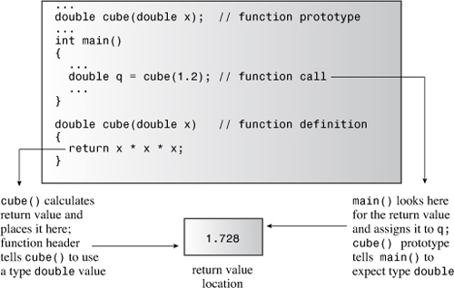
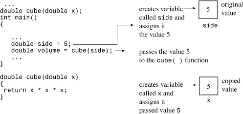
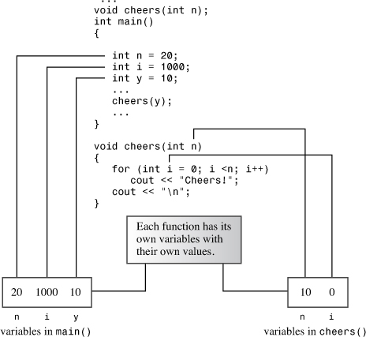
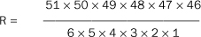
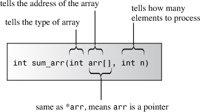
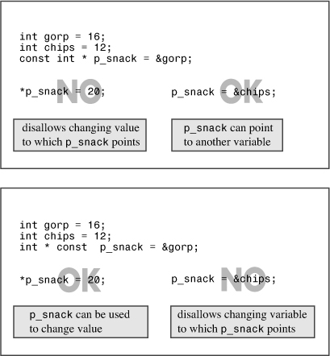
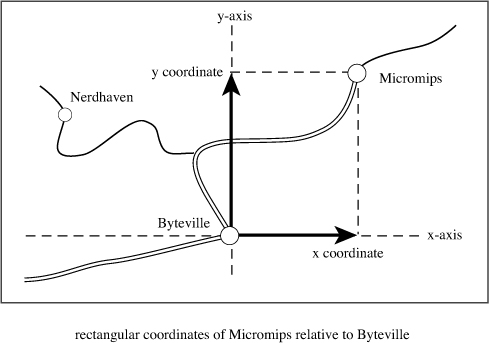
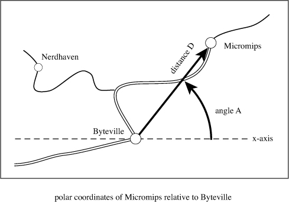

In this chapter you’ll learn about the following:
• Function basics
• Function prototypes
• Passing function arguments by value
• Designing functions to process arrays
• Using const pointer parameters
• Designing functions to process text strings
• Designing functions to process structures
• Designing functions to process objects of the string class
• Functions that call themselves (recursion)
• Pointers to functions
Fun is where you find it. Look closely, and you can find it in functions. C++ comes with a large library of useful functions (the standard ANSI C library plus several C++ classes), but real programming pleasure comes with writing your own functions. (On the other hand, real programming productivity can come with learning more about what you can do with the STL and the BOOST C++ libraries.) This chapter and Chapter 8, “Adventures in Functions,” examine how to define functions, convey information to them, and retrieve information from them. After reviewing how functions work, this chapter concentrates on how to use functions in conjunction with arrays, strings, and structures. Finally, it touches on recursion and pointers to functions. If you’ve paid your C dues, you’ll find much of this chapter familiar. But don’t be lulled into a false sense of expertise. C++ has made several additions to what C functions can do, and Chapter 8 deals primarily with those. Meanwhile, let’s attend to the fundamentals.
Let’s review what you’ve already seen about functions. To use a C++ function, you must do the following:
• Provide a function definition
• Provide a function prototype
• Call the function
If you’re using a library function, the function has already been defined and compiled for you. Also you can and should use a standard library header file to provide the prototype. All that’s left to do is call the function properly. The examples so far in this book have done that several times. For example, the standard C library includes the strlen() function for finding the length of the string. The associated standard header file cstring contains the function prototype for strlen() and several other string-related functions. This advance work allows you to use the strlen() function in programs without further worries.
But when you create your own functions, you have to handle all three aspects—defining, prototyping, and calling—yourself. Listing 7.1 shows these steps in a short example.
// calling.cpp -- defining, prototyping, and calling a function
#include <iostream>
void simple(); // function prototype
int main()
{
using namespace std;
cout << "main() will call the simple() function:\n";
simple(); // function call
cout << "main() is finished with the simple() function.\n";
// cin.get();
return 0;
}
// function definition
void simple()
{
using namespace std;
cout << "I'm but a simple function.\n";
}
Here’s the output of the program in Listing 7.1:
main() will call the simple() function:
I'm but a simple function.
main() is finished with the simple() function.
Program execution in main() halts as control transfers to the simple() function. When simple() finishes, program execution in main() resumes. This example places a using directive inside each function definition because each function uses cout. Alternatively, the program could have a single using directive placed above the function definitions or otherwise use std::cout.
Let’s take a more detailed look at these steps now.
You can group functions into two categories: those that don’t have return values and those that do. Functions without return values are termed type void functions and have the following general form:
void functionName(parameterList)
{
statement(s)
return; // optional
}
Here parameterList specifies the types and number of arguments (parameters) passed to the function. This chapter more fully investigates this list later. The optional return statement marks the end of the function. Otherwise, the function terminates at the closing brace. Type void functions correspond to Pascal procedures, FORTRAN subroutines, and modern BASIC subprogram procedures. Typically, you use a void function to perform some sort of action. For example, a function to print Cheers! a given number (n) of times could look like this:
void cheers(int n) // no return value
{
for (int i = 0; i < n; i++)
std::cout << "Cheers! ";
std::cout << std::endl;
}
The int n parameter list means that cheers() expects to have an int value passed to it as an argument when you call this function.
A function with a return value produces a value that it returns to the function that called it. In other words, if the function returns the square root of 9.0 (sqrt(9.0)), the function call has the value 3.0. Such a function is declared as having the same type as the value it returns. Here is the general form:
typeName functionName(parameterList)
{
statements
return value; // value is type cast to type typeName
}
Functions with return values require that you use a return statement so that the value is returned to the calling function. The value itself can be a constant, a variable, or a more general expression. The only requirement is that the expression reduces to a value that has, or is convertible to, the typeName type. (If the declared return type is, say, double, and the function returns an int expression, the int value is type cast to type double.) The function then returns the final value to the function that called it. C++ does place a restriction on what types you can use for a return value: The return value cannot be an array. Everything else is possible—integers, floating-point numbers, pointers, and even structures and objects! (Interestingly, even though a C++ function can’t return an array directly, it can return an array that’s part of a structure or object.)
As a programmer, you don’t need to know how a function returns a value, but knowing the method might clarify the concept for you. (Also it gives you something to talk about with your friends and family.) Typically, a function returns a value by copying the return value to a specified CPU register or memory location. Then the calling program examines that location. Both the returning function and the calling function have to agree on the type of data at that location. The function prototype tells the calling program what to expect, and the function definition tells the called program what to return (see Figure 7.1). Providing the same information in the prototype as in the definition might seem like extra work, but it makes good sense. Certainly, if you want a courier to pick up something from your desk at the office, you enhance the odds of the task being done right if you provide a description of what you want both to the courier and to someone at the office.
Figure 7.1. A typical return value mechanism.

A function terminates after executing a return statement. If a function has more than one return statement—for example, as alternatives to different if else selections—the function terminates after it executes the first return statement it reaches. For instance, in the following example, the else isn’t needed, but it does help the casual reader understand the intent:
int bigger(int a, int b)
{
if (a > b )
return a; // if a > b, function terminates here
else
return b; // otherwise, function terminates here
}
(Usually, having multiple return statements in a function is considered potentially confusing, and some compilers might issue a warning. However, the code here is simple enough to understand.)
Functions with return values are much like functions in Pascal, FORTRAN, and BASIC. They return a value to the calling program, which can then assign that value to a variable, display the value, or otherwise use it. Here’s a simple example that returns the cube of a type double value:
double cube(double x) // x times x times x
{
return x * x * x; // a type double value
}
For example, the function call cube(1.2) returns the value 1.728. Note that this return statement uses an expression. The function computes the value of the expression (1.728, in this case) and returns the value.
By now you are familiar with making function calls, but you may be less comfortable with function prototyping because that’s often been hidden in the include files. Listing 7.2 shows the cheers() and cube() functions used in a program; notice the function prototypes.
// protos.cpp -- using prototypes and function calls
#include <iostream>
void cheers(int); // prototype: no return value
double cube(double x); // prototype: returns a double
int main()
{
using namespace std;
cheers(5); // function call
cout << "Give me a number: ";
double side;
cin >> side;
double volume = cube(side); // function call
cout << "A " << side <<"-foot cube has a volume of ";
cout << volume << " cubic feet.\n";
cheers(cube(2)); // prototype protection at work
return 0;
}
void cheers(int n)
{
using namespace std;
for (int i = 0; i < n; i++)
cout << "Cheers! ";
cout << endl;
}
double cube(double x)
{
return x * x * x;
}
The program in Listing 7.2 places a using directive in only those functions that use the members of the std namespace. Here’s a sample run:
Cheers! Cheers! Cheers! Cheers! Cheers!
Give me a number: 5
A 5-foot cube has a volume of 125 cubic feet.
Cheers! Cheers! Cheers! Cheers! Cheers! Cheers! Cheers! Cheers!
Note that main() calls the type void function cheers() by using the function name and arguments followed by a semicolon: cheers(5);. This is an example of a function call statement. But because cube() has a return value, main() can use it as part of an assignment statement:
double volume = cube(side);
But I said earlier that you should concentrate on the prototypes. What should you know about prototypes? First, you should understand why C++ requires prototypes. Then because C++ requires prototypes, you should know the proper syntax. Finally, you should appreciate what the prototype does for you. Let’s look at these points in turn, using Listing 7.2 as a basis for discussion.
A prototype describes the function interface to the compiler. That is, it tells the compiler what type of return value, if any, the function has, and it tells the compiler the number and type of function arguments. Consider how the prototype affects this function call from Listing 7.2:
double volume = cube(side);
First, the prototype tells the compiler that cube() should have one type double argument. If the program fails to provide the argument, prototyping allows the compiler to catch the error. Second, when the cube() function finishes its calculation, it places its return value at some specified location—perhaps in a CPU register, perhaps in memory. Then the calling function, main() in this case, retrieves the value from that location. Because the prototype states that cube() is type double, the compiler knows how many bytes to retrieve and how to interpret them. Without that information, the compiler could only guess, and that is something compilers won’t do.
Still, you might wonder, why does the compiler need a prototype? Can’t it just look further in the file and see how the functions are defined? One problem with that approach is that it is not very efficient. The compiler would have to put compiling main() on hold while searching the rest of the file. An even more serious problem is the fact that the function might not even be in the file. C++ allows you to spread a program over several files, which you can compile independently and then combine later. In such a case, the compiler might not have access to the function code when it’s compiling main(). The same is true if the function is part of a library. The only way to avoid using a function prototype is to place the function definition before its first use. That is not always possible. Also the C++ programming style is to put main() first because it generally provides the structure for the whole program.
A function prototype is a statement, so it must have a terminating semicolon. The simplest way to get a prototype is to copy the function header from the function definition and add a semicolon. That’s what the program in Listing 7.2 does for cube():
double cube(double x); // add ; to header to get prototype
However, the function prototype does not require that you provide names for the variables; a list of types is enough. The program in Listing 7.2 prototypes cheers() by using only the argument type:
void cheers(int); // okay to drop variable names in prototype
In general, you can either include or exclude variable names in the argument lists for prototypes. The variable names in the prototype just act as placeholders, so if you do use names, they don’t have to match the names in the function definition.
You’ve seen that prototypes help the compiler. But what do they do for you? They greatly reduce the chances of program errors. In particular, prototypes ensure the following:
• The compiler correctly handles the function return value.
• The compiler checks that you use the correct number of function arguments.
• The compiler checks that you use the correct type of arguments. If you don’t, it converts the arguments to the correct type, if possible.
We’ve already discussed how to correctly handle the return value. Let’s look now at what happens when you use the wrong number of arguments. For example, suppose you make the following call:
double z = cube();
A compiler that doesn’t use function prototyping lets this go by. When the function is called, it looks where the call to cube() should have placed a number and uses whatever value happens to be there. This is how C worked before ANSI C borrowed prototyping from C++. Because prototyping is optional for ANSI C, this is how some C programs still work. But in C++ prototyping is not optional, so you are guaranteed protection from that sort of error.
Next, suppose you provide an argument but it is the wrong type. In C, this could create weird errors. For example, if a function expects a type int value (assume that’s 16 bits) and you pass a double (assume that’s 64 bits), the function looks at just the first 16 bits of the 64 and tries to interpret them as an int value. However, C++ automatically converts the value you pass to the type specified in the prototype, provided that both are arithmetic types. For example, Listing 7.2 manages to get two type mismatches in one statement:
cheers(cube(2));
First, the program passes the int value of 2 to cube(), which expects type double. The compiler, noting that the cube() prototype specifies a type double argument, converts 2 to 2.0, a type double value. Then cube() returns a type double value (8.0) to be used as an argument to cheers(). Again, the compiler checks the prototypes and notes that cheers() requires an int. It converts the return value to the integer 8. In general, prototyping produces automatic type casts to the expected types. (Function overloading, discussed in Chapter 8, can create ambiguous situations, however, that prevent some automatic type casts.)
Automatic type conversion doesn’t head off all possible errors. For example, if you pass a value of 8.33E27 to a function that expects an int, such a large value cannot be converted correctly to a mere int. Some compilers warn you of possible data loss when there is an automatic conversion from a larger type to a smaller.
Also prototyping results in type conversion only when it makes sense. It won’t, for example, convert an integer to a structure or pointer.
Prototyping takes place during compile time and is termed static type checking. Static type checking, as you’ve just seen, catches many errors that are much more difficult to catch during runtime.
It’s time to take a closer look at function arguments. C++ normally passes arguments by value. That means the numeric value of the argument is passed to the function, where it is assigned to a new variable. For example, Listing 7.2 has this function call:
double volume = cube(side);
Here side is a variable that, in the sample run, had the value 5. The function header for cube(), recall, was this:
double cube(double x)
When this function is called, it creates a new type double variable called x and initializes it with the value 5. This insulates data in main() from actions that take place in cube() because cube() works with a copy of side rather than with the original data. You’ll see an example of this protection soon. A variable that’s used to receive passed values is called a formal argument or formal parameter. The value passed to the function is called the actual argument or actual parameter. To simplify matters a bit, the C++ Standard uses the word argument by itself to denote an actual argument or parameter and the word parameter by itself to denote a formal argument or parameter. Using this terminology, argument passing initializes the parameter to the argument (see Figure 7.2).

Variables, including parameters, declared within a function are private to the function. When a function is called, the computer allocates the memory needed for these variables. When the function terminates, the computer frees the memory that was used for those variables. (Some C++ literature refers to this allocating and freeing of memory as creating and destroying variables. That does make it sound much more exciting.) Such variables are called local variables because they are localized to the function. As mentioned previously, this helps preserve data integrity. It also means that if you declare a variable called x in main() and another variable called x in some other function, these are two distinct, unrelated variables, much as the Albany in California is distinct from the Albany in New York (see Figure 7.3). Such variables are also termed automatic variables because they are allocated and deallocated automatically during program execution.

A function can have more than one argument. In the function call, you just separate the arguments with commas:
n_chars('R', 25);
This passes two arguments to the function n_chars(), which will be defined shortly.
Similarly, when you define the function, you use a comma-separated list of parameter declarations in the function header:
void n_chars(char c, int n) // two arguments
This function header states that the function n_chars() takes one type char argument and one type int argument. The parameters c and n are initialized with the values passed to the function. If a function has two parameters of the same type, you have to give the type of each parameter separately. You can’t combine declarations the way you can when you declare regular variables:
void fifi(float a, float b) // declare each variable separately
void fufu(float a, b) // NOT acceptable
As with other functions, you just add a semicolon to get a prototype:
void n_chars(char c, int n); // prototype, style 1
As with single arguments, you don’t have to use the same variable names in the prototype as in the definition, and you can omit the variable names in the prototype:
void n_chars(char, int); // prototype, style 2
However, providing variable names can make the prototype more understandable, particularly if two parameters are the same type. Then the names can remind you which argument is which:
double melon_density(double weight, double volume);
Listing 7.3 shows an example of a function with two arguments. It also illustrates how changing the value of a formal parameter in a function has no effect on the data in the calling program.
// twoarg.cpp -- a function with 2 arguments
#include <iostream>
using namespace std;
void n_chars(char, int);
int main()
{
int times;
char ch;
cout << "Enter a character: ";
cin >> ch;
while (ch != 'q') // q to quit
{
cout << "Enter an integer: ";
cin >> times;
n_chars(ch, times); // function with two arguments
cout << "\nEnter another character or press the"
" q-key to quit: ";
cin >> ch;
}
cout << "The value of times is " << times << ".\n";
cout << "Bye\n";
return 0;
}
void n_chars(char c, int n) // displays c n times
{
while (n-- > 0) // continue until n reaches 0
cout << c;
}
The program in Listing 7.3 illustrates placing a using directive above the function definitions rather than within the functions. Here is a sample run:
Enter a character: W
Enter an integer: 50
WWWWWWWWWWWWWWWWWWWWWWWWWWWWWWWWWWWWWWWWWWWWWWWWWW
Enter another character or press the q-key to quit: a
Enter an integer: 20
aaaaaaaaaaaaaaaaaaaa
Enter another character or press the q-key to quit: q
The value of times is 20.
Bye
The main() function in Listing 7.3 uses a while loop to provide repeated input (and to keep your loop skills fresh). Note that it uses cin >> ch rather than cin.get(ch) or ch = cin.get() to read a character. There’s a good reason for this. Recall that the two cin.get()functions read all input characters, including spaces and newlines, whereas cin >> skips spaces and newlines. When you respond to the program prompt, you have to press Enter at the end of each line, thus generating a newline character. The cin >> ch approach conveniently skips over these newlines, but the cin.get() siblings read the newline following each number entered as the next character to display. You can program around this nuisance, but it’s simpler to use cin as the program in Listing 7.3 does.
The n_chars() function takes two arguments: a character c and an integer n. It then uses a loop to display the character the number of times the integer specifies:
while (n-- > 0) // continue until n reaches 0
cout << c;
Notice that the program keeps count by decrementing the n variable, where n is the formal parameter from the argument list. This variable is assigned the value of the times variable in main(). The while loop then decreases n to 0, but, as the sample run demonstrates, changing the value of n has no effect on times. Even if you use the name n instead of times in main(), the value of n in main() is unaffected by changes in the value of n in n_chars().
Let’s create a more ambitious function—one that performs a nontrivial calculation. Also the function illustrates the use of local variables other than the function’s formal arguments.
Many states in the United States now sponsor a lottery with some form of Lotto game. Lotto lets you pick a certain number of choices from a card. For example, you might get to pick six numbers from a card having 51 numbers. Then the Lotto managers pick six numbers at random. If your choice exactly matches theirs, you win a few million dollars or so. Our function will calculate the probability that you have a winning pick. (Yes, a function that successfully predicts the winning picks themselves would be more useful, but C++, although powerful, has yet to implement psychic faculties.)
First, you need a formula. If you have to pick six values out of 51, mathematics says that you have one chance in R of winning, where the following formula gives R:

For six choices, the denominator is the product of the first six integers, or 6 factorial. The numerator is also the product of six consecutive numbers, this time starting with 51 and going down. More generally, if you pick picks values out of numbers numbers, the denominator is picks factorial and the numerator is the product of picks integers, starting with the value numbers and working down. You can use a for loop to make that calculation:
long double result = 1.0;
for (n = numbers, p = picks; p > 0; n--, p--)
result = result * n / p ;
Rather than multiply all the numerator terms first, the loop begins by multiplying 1.0 by the first numerator term and then dividing by the first denominator term. Then in the next cycle, the loop multiplies and divides by the second numerator and denominator terms. This keeps the running product smaller than if you did all the multiplication first. For example, compare
(10 * 9) / (2 * 1)
with
(10 / 2) * (9 / 1)
The first evaluates to 90 / 2 and then to 45, whereas the second evaluates to 5 × 9 and then to 45. Both give the same answer, but the first method produces a larger intermediate value (90) than does the second. The more factors you have, the bigger the difference gets. For large numbers, this strategy of alternating multiplication with division can keep the calculation from overflowing the maximum possible floating-point value.
Listing 7.4 incorporates this formula into a probability() function. Because the number of picks and the total number of choices should be positive values, the program uses the unsigned int type (unsigned, for short) for those quantities. Multiplying several integers can produce pretty large results, so lotto.cpp uses the long double type for the function’s return value. Also terms such as 49 / 6 produce a truncation error for integer types.
Some C++ implementations don’t support type long double. If your implementation falls into that category, try ordinary double instead.
// lotto.cpp -- probability of winning
#include <iostream>
// Note: some implementations require double instead of long double
long double probability(unsigned numbers, unsigned picks);
int main()
{
using namespace std;
double total, choices;
cout << "Enter the total number of choices on the game card and\n"
"the number of picks allowed:\n";
while ((cin >> total >> choices) && choices <= total)
{
cout << "You have one chance in ";
cout << probability(total, choices); // compute the odds
cout << " of winning.\n";
cout << "Next two numbers (q to quit): ";
}
cout << "bye\n";
return 0;
}
// the following function calculates the probability of picking picks
// numbers correctly from numbers choices
long double probability(unsigned numbers, unsigned picks)
{
long double result = 1.0; // here come some local variables
long double n;
unsigned p;
for (n = numbers, p = picks; p > 0; n--, p--)
result = result * n / p ;
return result;
}
Here’s a sample run of the program in Listing 7.4:
Enter the total number of choices on the game card and
the number of picks allowed:
49 6
You have one chance in 1.39838e+007 of winning.
Next two numbers (q to quit): 51 6
You have one chance in 1.80095e+007 of winning.
Next two numbers (q to quit): 38 6
You have one chance in 2.76068e+006 of winning.
Next two numbers (q to quit): q
bye
Notice that increasing the number of choices on the game card greatly increases the odds against winning.
The probability() function in Listing 7.4 illustrates two kinds of local variables you can have in a function. First, there are the formal parameters (numbers and picks), which are declared in the function header before the opening brace. Then come the other local variables (result, n, and p). They are declared in between the braces bounding the function definition. The main difference between the formal parameters and the other local variables is that the formal parameters get their values from the function that calls probability(), whereas the other variables get values from within the function.
So far the sample functions in this book have been simple, using only the basic types for arguments and return values. But functions can be the key to handling more involved types, such as arrays and structures. Let’s take a look now at how arrays and functions get along with each other.
Suppose you use an array to keep track of how many cookies each person has eaten at a family picnic. (Each array index corresponds to a person, and the value of the element corresponds to the number of cookies that person has eaten.) Now you want the total. That’s easy to find; you just use a loop to add all the array elements. But adding array elements is such a common task that it makes sense to design a function to do the job. Then you won’t have to write a new loop every time you have to sum an array.
Let’s consider what the function interface involves. Because the function calculates a sum, it should return the answer. If you keep your cookies intact, you can use a function with a type int return value. So that the function knows what array to sum, you want to pass the array name as an argument. And to make the function general so that it is not restricted to an array of a particular size, you pass the size of the array. The only new ingredient here is that you have to declare that one of the formal arguments is an array name. Let’s see what that and the rest of the function header look like:
int sum_arr(int arr[], int n) // arr = array name, n = size
This looks plausible. The brackets seem to indicate that arr is an array, and the fact that the brackets are empty seems to indicate that you can use the function with an array of any size. But things are not always as they seem: arr is not really an array; it’s a pointer! The good news is that you can write the rest of the function just as if arr were an array. First, let’s use an example to check that this approach works, and then let’s look into why it works.
Listing 7.5 illustrates using a pointer as if it were an array name. The program initializes the array to some values and uses the sum_arr() function to calculate the sum. Note that the sum_arr() function uses arr as if it were an array name.
// arrfun1.cpp -- functions with an array argument
#include <iostream>
const int ArSize = 8;
int sum_arr(int arr[], int n); // prototype
int main()
{
using namespace std;
int cookies[ArSize] = {1,2,4,8,16,32,64,128};
// some systems require preceding int with static to
// enable array initialization
int sum = sum_arr(cookies, ArSize);
cout << "Total cookies eaten: " << sum << "\n";
return 0;
}
// return the sum of an integer array
int sum_arr(int arr[], int n)
{
int total = 0;
for (int i = 0; i < n; i++)
total = total + arr[i];
return total;
}
Here is the output of the program in Listing 7.5:
Total cookies eaten: 255
As you can see, the program works. Now let’s look at why it works.
The key to the program in Listing 7.5 is that C++, like C, in most contexts treats the name of an array as if it were a pointer. Recall from Chapter 4, “Compound Types,” that C++ interprets an array name as the address of its first element:
cookies == &cookies[0] // array name is address of first element
(There are a few exceptions to this rule. First, the array declaration uses the array name to label the storage. Second, applying sizeof to an array name yields the size of the whole array, in bytes. Third, as mentioned in Chapter 4, applying the address operator & to an array name returns the address of the whole array; for example, &cookies would be the address of a 32-byte block of memory if int is 4 bytes.)
Listing 7.5 makes the following function call:
int sum = sum_arr(cookies, ArSize);
Here cookies is the name of an array, hence by C++ rules cookies is the address of the array’s first element. The function passes an address. Because the array has type int elements, cookies must be type pointer-to-int, or int *. This suggests that the correct function header should be this:
int sum_arr(int * arr, int n) // arr = array name, n = size
Here int *arr has replaced int arr[]. It turns out that both headers are correct because in C++ the notations int *arr and int arr[] have the identical meaning when (and only when) used in a function header or function prototype. Both mean that arr is a pointer-to-int. However, the array notation version (int arr[]) symbolically reminds you that arr not only points to an int, it points to the first int in an array of ints. This book uses the array notation when the pointer is to the first element of an array, and it uses the pointer notation when the pointer is to an isolated value. Remember that the notations int *arr and int arr[] are not synonymous in any other context. For example, you can’t use the notation int tip[] to declare a pointer in the body of a function.
Given that the variable arr actually is a pointer, the rest of the function makes sense. As you might recall from the discussion of dynamic arrays in Chapter 4, you can use the bracket array notation equally well with array names or with pointers to access elements of an array. Whether arr is a pointer or an array name, the expression arr[3] means the fourth element of the array. And it probably will do no harm at this point to remind you of the following two identities:
arr[i] == *(ar + i) // values in two notations
&arr[i] == ar + i // addresses in two notations
Remember that adding one to a pointer, including an array name, actually adds a value equal to the size, in bytes, of the type to which the pointer points. Pointer addition and array subscription are two equivalent ways of counting elements from the beginning of an array.
Let’s look at the implications of Listing 7.5. The function call sum_arr(cookies, ArSize) passes the address of the first element of the cookies array and the number of elements of the array to the sum_arr() function. The sum_arr() function initializes the cookies address to the pointer variable arr and initializes ArSize to the int variable n. This means Listing 7.5 doesn’t really pass the array contents to the function. Instead, it tells the function where the array is (the address), what kind of elements it has (the type), and how many elements it has (the n variable). (See Figure 7.4.) Armed with this information, the function then uses the original array. If you pass an ordinary variable, the function works with a copy. But if you pass an array, the function works with the original. Actually, this difference doesn’t violate C++’s pass-by-value approach. The sum_arr() function still passes a value that’s assigned to a new variable. But that value is a single address, not the contents of an array.
Figure 7.4. Telling a function about an array.

Is the correspondence between array names and pointers a good thing? Indeed, it is. The design decision to use array addresses as arguments saves the time and memory needed to copy an entire array. The overhead for using copies can be prohibitive if you’re working with large arrays. With copies, not only does a program need more computer memory, but it has to spend time copying large blocks of data. On the other hand, working with the original data raises the possibility of inadvertent data corruption. That’s a real problem in classic C, but ANSI C and C++’s const modifier provides a remedy. You’ll soon see an example. But first, let’s alter Listing 7.5 to illustrate some points about how array functions operate. Listing 7.6 demonstrates that cookies and arr have the same value. It also shows how the pointer concept makes the sum_arr function more versatile than it may have appeared at first. To provide a bit of variety and to show you what it looks like, the program uses the std:: qualifier instead of the using directive to provide access to cout and endl.
// arrfun2.cpp -- functions with an array argument
#include <iostream>
const int ArSize = 8;
int sum_arr(int arr[], int n);
// use std:: instead of using directive
int main()
{
int cookies[ArSize] = {1,2,4,8,16,32,64,128};
// some systems require preceding int with static to
// enable array initialization
std::cout << cookies << " = array address, ";
// some systems require a type cast: unsigned (cookies)
std::cout << sizeof cookies << " = sizeof cookies\n";
int sum = sum_arr(cookies, ArSize);
std::cout << "Total cookies eaten: " << sum << std::endl;
sum = sum_arr(cookies, 3); // a lie
std::cout << "First three eaters ate " << sum << " cookies.\n";
sum = sum_arr(cookies + 4, 4); // another lie
std::cout << "Last four eaters ate " << sum << " cookies.\n";
return 0;
}
// return the sum of an integer array
int sum_arr(int arr[], int n)
{
int total = 0;
std::cout << arr << " = arr, ";
// some systems require a type cast: unsigned (arr)
std::cout << sizeof arr << " = sizeof arr\n";
for (int i = 0; i < n; i++)
total = total + arr[i];
return total;
}
Here’s the output of the program in Listing 7.6:
003EF9FC = array address, 32 = sizeof cookies
003EF9FC = arr, 4 = sizeof arr
Total cookies eaten: 255
003EF9FC = arr, 4 = sizeof arr
First three eaters ate 7 cookies.
003EFA0C = arr, 4 = sizeof arr
Last four eaters ate 240 cookies.
Note that the address values and the array and integer sizes will vary from system to system. Also some implementations will display the addresses in base 10 notation instead of in hexadecimal. Others will use hexadecimal digits and the 0x hexadecimal prefix.
Listing 7.6 illustrates some very interesting points about array functions. First, note that cookies and arr both evaluate to the same address, exactly as claimed. But sizeof cookies is 32, whereas sizeof arr is only 4. That’s because sizeof cookies is the size of the whole array, whereas sizeof arr is the size of the pointer variable. (This program execution takes place on a system that uses 4-byte addresses.) By the way, this is why you have to explicitly pass the size of the array rather than use sizeof arr in sum_arr(); the pointer by itself doesn’t reveal the size of the array.
Because the only way sum_arr() knows the number of elements in the array is through what you tell it with the second argument, you can lie to the function. For example, the second time the program uses the function, it makes this call:
sum = sum_arr(cookies, 3);
By telling the function that cookies has just three elements, you get the function to calculate the sum of the first three elements.
Why stop there? You can also lie about where the array starts:
sum = sum_arr(cookies + 4, 4);
Because cookies acts as the address of the first element, cookies + 4 acts as the address of the fifth element. This statement sums the fifth, sixth, seventh, and eighth elements of the array. Note in the output how the third call to the function assigns a different address to arr than the first two calls did. And yes, you can use &cookies[4] instead of cookies + 4 as the argument; they both mean the same thing.
To indicate the kind of array and the number of elements to an array-processing function, you pass the information as two separate arguments:
void fillArray(int arr[], int size); // prototype
Don’t try to pass the array size by using brackets notation:
void fillArray(int arr[size]); // NO -- bad prototype
When you choose to use an array to represent data, you are making a design decision. But design decisions should go beyond how data is stored; they should also involve how the data is used. Often you’ll find it profitable to write specific functions to handle specific data operations. (The profits here include increased program reliability, ease of modification, and ease of debugging.) Also when you begin integrating storage properties with operations when you think about a program, you are taking an important step toward the OOP mind-set; that, too, might prove profitable in the future.
Let’s examine a simple case. Suppose you want to use an array to keep track of the dollar values of your real estate. (If necessary, suppose you have real estate.) You have to decide what type to use. Certainly, double is less restrictive in its range than int or long, and it provides enough significant digits to represent the values precisely. Next, you have to decide on the number of array elements. (With dynamic arrays created with new, you can put off that decision, but let’s keep things simple.) Let’s say that you have no more than five properties, so you can use an array of five doubles.
Now consider the possible operations you might want to execute with the real estate array. Two very basic ones are reading values into the array and displaying the array contents. Let’s add one more operation to the list: reassessing the value of the properties. For simplicity, assume that all your properties increase or decrease in value at the same rate. (Remember, this is a book on C++, not on real estate management.) Next, fit a function to each operation and then write the code accordingly. We’ll go through the steps of creating these pieces of a program next. Afterward, we’ll fit them into a complete example.
Because a function with an array name argument accesses the original array, not a copy, you can use a function call to assign values to array elements. One argument to the function will be the name of the array to be filled. In general, a program might manage more than one person’s investments, hence more than one array, so you don’t want to build the array size into the function. Instead, you pass the array size as a second argument, as in the previous example. Also it’s possible that you might want to quit reading data before filling the array, so you want to build that feature in to the function. Because you might enter fewer than the maximum number of elements, it makes sense to have the function return the actual number of values entered. These considerations suggest the following function prototype:
int fill_array(double ar[], int limit);
The function takes an array name argument and an argument specifying the maximum number of items to be read, and the function returns the actual number of items read. For example, if you use this function with an array of five elements, you pass 5 as the second argument. If you then enter only three values, the function returns 3.
You can use a loop to read successive values into the array, but how can you terminate the loop early? One way is to use a special value to indicate the end of input. Because no property should have a negative value, you can use a negative number to indicate the end of input. Also the function should do something about bad input, such as terminating further input. Given these considerations, you can code the function as follows:
int fill_array(double ar[], int limit)
{
using namespace std;
double temp;
int i;
for (i = 0; i < limit; i++)
{
cout << "Enter value #" << (i + 1) << ": ";
cin >> temp;
if (!cin) // bad input
{
cin.clear();
while (cin.get() != '\n')
continue;
cout << "Bad input; input process terminated.\n";
break;
}
else if (temp < 0) // signal to terminate
break;
ar[i] = temp;
}
return i;
}
Note that this code includes a prompt to the user. If the user enters a non-negative value, the value is assigned to the array. Otherwise, the loop terminates. If the user enters only valid values, the loop terminates after it reads limit values. The last thing the loop does is increment i, so after the loop terminates, i is one greater than the last array index, hence it’s equal to the number of filled elements. The function then returns that value.
constBuilding a function to display the array contents is simple. You pass the name of the array and the number of filled elements to the function, which then uses a loop to display each element. But there is another consideration—guaranteeing that the display function doesn’t alter the original array. Unless the purpose of a function is to alter data passed to it, you should safeguard it from doing so. That protection comes automatically with ordinary arguments because C++ passes them by value, and the function works with a copy. But functions that use an array work with the original. After all, that’s why the fill_array() function is able to do its job. To keep a function from accidentally altering the contents of an array argument, you can use the keyword const (discussed in Chapter 3, “Dealing with Data”) when you declare the formal argument:
void show_array(const double ar[], int n);
The declaration states that the pointer ar points to constant data. This means that you can’t use ar to change the data. That is, you can use a value such as ar[0], but you can’t change that value. Note that this doesn’t mean that the original array needs be constant; it just means that you can’t use ar in the show_array() function to change the data. Thus, show_array() treats the array as read-only data. Suppose you accidentally violate this restriction by doing something like the following in the show_array() function:
ar[0] += 10;
In this case, the compiler will put a stop to your wrongful ways. Borland C++, for example, gives an error message like this (edited slightly):
Cannot modify a const object in function
show_array(const double *,int)
Other compilers may choose to express their displeasure in different words.
The message reminds you that C++ interprets the declaration const double ar[] to mean const double *ar. Thus, the declaration really says that ar points to a constant value. We’ll discuss this in detail when we finish with the current example. Meanwhile, here is the code for the show_array() function:
void show_array(const double ar[], int n)
{
using namespace std;
for (int i = 0; i < n; i++)
{
cout << "Property #" << (i + 1) << ": $";
cout << ar[i] << endl;
}
}
The third operation for the array in this example is multiplying each element by the same revaluation factor. You need to pass three arguments to the function: the factor, the array, and the number of elements. No return value is needed, so the function can look like this:
void revalue(double r, double ar[], int n)
{
for (int i = 0; i < n; i++)
ar[i] *= r;
}
Because this function is supposed to alter the array values, you don’t use const when you declare ar.
Now that you’ve defined a data type in terms of how it’s stored (an array) and how it’s used (three functions), you can put together a program that uses the design. Because you’ve already built all the array-handling tools, you’ve greatly simplified programming main(). The program does check to see if the user responds to the prompt for a revaluation factor with a number. In this case, rather than stopping if the user fails to comply, the program uses a loop to ask the user to do the right thing. Most of the remaining programming work consists of having main() call the functions you’ve just developed. Listing 7.7 shows the result. It places a using directive in just those functions that use the iostream facilities.
// arrfun3.cpp -- array functions and const
#include <iostream>
const int Max = 5;
// function prototypes
int fill_array(double ar[], int limit);
void show_array(const double ar[], int n); // don't change data
void revalue(double r, double ar[], int n);
int main()
{
using namespace std;
double properties[Max];
int size = fill_array(properties, Max);
show_array(properties, size);
if (size > 0)
{
cout << "Enter revaluation factor: ";
double factor;
while (!(cin >> factor)) // bad input
{
cin.clear();
while (cin.get() != '\n')
continue;
cout << "Bad input; Please enter a number: ";
}
revalue(factor, properties, size);
show_array(properties, size);
}
cout << "Done.\n";
cin.get();
cin.get();
return 0;
}
int fill_array(double ar[], int limit)
{
using namespace std;
double temp;
int i;
for (i = 0; i < limit; i++)
{
cout << "Enter value #" << (i + 1) << ": ";
cin >> temp;
if (!cin) // bad input
{
cin.clear();
while (cin.get() != '\n')
continue;
cout << "Bad input; input process terminated.\n";
break;
}
else if (temp < 0) // signal to terminate
break;
ar[i] = temp;
}
return i;
}
// the following function can use, but not alter,
// the array whose address is ar
void show_array(const double ar[], int n)
{
using namespace std;
for (int i = 0; i < n; i++)
{
cout << "Property #" << (i + 1) << ": $";
cout << ar[i] << endl;
}
}
// multiplies each element of ar[] by r
void revalue(double r, double ar[], int n)
{
for (int i = 0; i < n; i++)
ar[i] *= r;
}
Here are two sample runs of the program in Listing 7.7:
Enter value #1: 100000
Enter value #2: 80000
Enter value #3: 222000
Enter value #4: 240000
Enter value #5: 118000
Property #1: $100000
Property #2: $80000
Property #3: $222000
Property #4: $240000
Property #5: $118000
Enter revaluation factor: 0.8
Property #1: $80000
Property #2: $64000
Property #3: $177600
Property #4: $192000
Property #5: $94400
Done.
Enter value #1: 200000
Enter value #2: 84000
Enter value #3: 160000
Enter value #4: -2
Property #1: $200000
Property #2: $84000
Property #3: $160000
Enter reevaluation factor: 1.20
Property #1: $240000
Property #2: $100800
Property #3: $192000
Done.
Recall that fill_array() prescribes that input should quit when the user enters five properties or enters a negative number, whichever comes first. The first output example illustrates reaching the five-property limit, and the second output example illustrates that entering a negative value terminates the input phase.
We’ve already discussed the important programming details related to the real estate example, so let’s reflect on the process. You began by thinking about the data type and designed appropriate functions to handle the data. Then you assembled these functions into a program. This is sometimes called bottom-up programming because the design process moves from the component parts to the whole. This approach is well suited to OOP, which concentrates on data representation and manipulation first. Traditional procedural programming, on the other hand, leans toward top-down programming, in which you develop a modular grand design first and then turn your attention to the details. Both methods are useful, and both lead to modular programs.
Suppose you want a function to process an array, say, of type double values. If the function is intended to modify the array, the prototype might look like this:
void f_modify(double ar[], int n);
If the function preserves values, the prototype might look like this:
void _f_no_change(const double ar[], int n);
Of course, you can omit the variable names in the prototypes, and the return type might be something other than void. The main points are that ar really is a pointer to the first element of the passed array and that because the number of elements is passed as an argument, either function can be used with any size of array as long as it is an array of double:
double rewards[1000];
double faults[50];
...
f_modify(rewards, 1000);
f_modify(faults, 50);
This idiom (pass the array name and size as arguments) works by passing two numbers—the array address and the number of elements. As you have seen, the function loses some knowledge about the original array; for example, it can’t use sizeof to get the size and relies on you to pass the correct number of elements.
As you’ve seen, C++ functions that process arrays need to be informed about the kind of data in the array, the location of the beginning of the array, and the number of elements in the array. The traditional C/C++ approach to functions that process arrays is to pass a pointer to the start of the array as one argument and to pass the size of the array as a second argument. (The pointer tells the function both where to find the array and the kind of data in it.) That gives the function the information it needs to find all the data.
There is another approach to giving a function the information it needs: specify a range of elements. This can be done by passing two pointers—one identifying the start of the array and one identifying the end of the array. The C++ Standard Template Library (STL; presented in Chapter 16, “The string Class and the Standard Template Library”), for example, generalizes the range approach. The STL approach uses the concept of “one past the end” to indicate an extent. That is, in the case of an array, the argument identifying the end of the array would be a pointer to the location just after the last element. For example, suppose you have this declaration:
double elbuod[20];
Then the two pointers elbuod and elbuod + 20 define the range. First, elbuod, being the name of the array, points to the first element. The expression elbuod + 19 points to the last element (that is, elbuod[19]), so elbuod + 20 points to one past the end of the array. Passing a range to a function tells it which elements to process. Listing 7.8 modifies Listing 7.6 to use two pointers to specify a range.
// arrfun4.cpp -- functions with an array range
#include <iostream>
const int ArSize = 8;
int sum_arr(const int * begin, const int * end);
int main()
{
using namespace std;
int cookies[ArSize] = {1,2,4,8,16,32,64,128};
// some systems require preceding int with static to
// enable array initialization
int sum = sum_arr(cookies, cookies + ArSize);
cout << "Total cookies eaten: " << sum << endl;
sum = sum_arr(cookies, cookies + 3); // first 3 elements
cout << "First three eaters ate " << sum << " cookies.\n";
sum = sum_arr(cookies + 4, cookies + 8); // last 4 elements
cout << "Last four eaters ate " << sum << " cookies.\n";
return 0;
}
// return the sum of an integer array
int sum_arr(const int * begin, const int * end)
{
const int * pt;
int total = 0;
for (pt = begin; pt != end; pt++)
total = total + *pt;
return total;
}
Here’s the output of the program in Listing 7.8:
Total cookies eaten: 255
First three eaters ate 7 cookies.
Last four eaters ate 240 cookies.
In Listing 7.8, notice the for loop in the sum_array() function:
for (pt = begin; pt != end; pt++)
total = total + *pt;
It sets pt to point to the first element to be processed (the one pointed to by begin) and adds *pt (the value of the element) to total. Then the loop updates pt by incrementing it, causing it to point to the next element. The process continues as long as pt != end. When pt finally equals end, it’s pointing to the location following the last element of the range, so the loop halts.
Second, notice how the different function calls specify different ranges within the array:
int sum = sum_arr(cookies, cookies + ArSize);
...
sum = sum_arr(cookies, cookies + 3); // first 3 elements
...
sum = sum_arr(cookies + 4, cookies + 8); // last 4 elements
The pointer value cookies + ArSize points to the location following the last element. (The array has ArSize elements, so cookies[ArSize - 1] is the last element, and its address is cookies + ArSize - 1.) So the range cookies, cookies + ArSize specifies the entire array. Similarly, cookies, cookies + 3 specifies the first three elements, and so on.
Note, by the way, that the rules for pointer subtraction imply that, in sum_arr(), the expression end - begin is an integer value equal to the number of elements in the range.
Also note that it’s important to pass the pointers in the correct order; the code assumes that end comes after begin.
constUsing const with pointers has some subtle aspects (pointers always seem to have subtle aspects), so let’s take a closer look. You can use the const keyword two different ways with pointers. The first way is to make a pointer point to a constant object, and that prevents you from using the pointer to change the pointed-to value. The second way is to make the pointer itself constant, and that prevents you from changing where the pointer points. Now for the details.
First, let’s declare a pointer pt that points to a constant:
int age = 39;
const int * pt = &age;
This declaration states that pt points to a const int (39, in this case). Therefore, you can’t use pt to change that value. In other words, the value *pt is const and cannot be modified:
*pt += 1; // INVALID because pt points to a const int
cin >> *pt; // INVALID for the same reason
Now for a subtle point. This declaration for pt doesn’t necessarily mean that the value it points to is really a constant; it just means the value is a constant insofar as pt is concerned. For example, pt points to age, and age is not const. You can change the value of age directly by using the age variable, but you can’t change the value indirectly via the pt pointer:
*pt = 20; // INVALID because pt points to a const int
age = 20; // VALID because age is not declared to be const
Previous examples have assigned the address of a regular variable to a regular pointer. This example assigns the address of a regular variable to a pointer-to-const. That leaves two other possibilities: assigning the address of a const variable to a pointer-to-const and assigning the address of a const to a regular pointer. Are they both possible? The first is, and the second isn’t:
const float g_earth = 9.80;
const float * pe = &g_earth; // VALID
const float g_moon = 1.63;
float * pm = &g_moon; // INVALID
For the first case, you can use neither g_earth nor pe to change the value 9.80. C++ doesn’t allow the second case for a simple reason: If you can assign the address of g_moon to pm, then you can cheat and use pm to alter the value of g_moon. That makes a mockery of g_moon’s const status, so C++ prohibits you from assigning the address of a const to a non-const pointer. (If you are really desperate, you can use a type cast to override the restriction; see Chapter 15, “Friends, Exceptions, and More,” for a discussion of the const_cast operator.)
The situation becomes a bit more complex if you have pointers to pointers. As you saw earlier, assigning a non-const pointer to a const pointer is okay, provided that you’re dealing with just one level of indirection:
int age = 39; // age++ is a valid operation
int * pd = &age; // *pd = 41 is a valid operation
const int * pt = pd; // *pt = 42 is an invalid operation
But pointer assignments that mix const and non-const in this manner are no longer safe when you go to two levels of indirection. If mixing const and non-const were allowed, you could do something like this:
const int **pp2;
int *p1;
const int n = 13;
pp2 = &p1; // not allowed, but suppose it were
*pp2 = &n; // valid, both const, but sets p1 to point at n
*p1 = 10; // valid, but changes const n
Here the code assigns a non-const address (&pl) to a const pointer (pp2), and that allows pl to be used to alter const data. So the rule that you can assign a non-const address or pointer to a const pointer works only if there is just one level of indirection—for example, if the pointer points to a fundamental data type.
You can assign the address of either const data or non-const data to a pointer-to-const, provided that the data type is not itself a pointer, but you can assign the address of non-const data only to a non-const pointer.
Suppose you have an array of const data:
const int months[12] = {31,28,31,30,31,30, 31, 31,30,31,30,31};
The prohibition against assigning the address of a constant array means that you cannot pass the array name as an argument to a function by using a non-constant formal argument:
int sum(int arr[], int n); // should have been const int arr[]
...
int j = sum(months, 12); // not allowed
This function call attempts to assign a const pointer (months) to a non-const pointer (arr), and the compiler disallows the function call.
For yet another subtle point, consider the following declarations:
int age = 39;
const int * pt = &age;
The const in the second declaration only prevents you from changing the value to which pt points, which is 39. It doesn’t prevent you from changing the value of pt itself. That is, you can assign a new address to pt:
int sage = 80;
pt = &sage; // okay to point to another location
But you still can’t use pt to change the value to which it points (now 80).
The second way to use const makes it impossible to change the value of the pointer itself:
int sloth = 3;
const int * ps = &sloth; // a pointer to const int
int * const finger = &sloth; // a const pointer to int
Note that the last declaration has repositioned the keyword const. This form of declaration constrains finger to point only to sloth. However, it allows you to use finger to alter the value of sloth. The middle declaration does not allow you to use ps to alter the value of sloth, but it permits you to have ps point to another location. In short, finger and *ps are both const, and *finger and ps are not const (see Figure 7.5).
Figure 7.5. Pointers-to-const and const pointers.

If you like, you can declare a const pointer to a const object:
double trouble = 2.0E30;
const double * const stick = &trouble;
Here stick can point only to trouble, and stick cannot be used to change the value of trouble. In short, both stick and *stick are const.
Typically you use the pointer-to-const form to protect data when you pass pointers as function arguments. For example, recall the show_array() prototype from Listing 7.5:
void show_array(const double ar[], int n);
Using const in this declaration means that show_array() cannot alter the values in any array that is passed to it. This technique works as long as there is just one level of indirection. Here, for example, the array elements are a fundamental type. But if they were pointers or pointers-to-pointers, you wouldn’t use const.
To write a function that has a two-dimensional array as an argument, you need to remember that the name of an array is treated as its address, so the corresponding formal parameter is a pointer, just as for one-dimensional arrays. The tricky part is declaring the pointer correctly. Suppose, for example, that you start with this code:
int data[3][4] = {{1,2,3,4}, {9,8,7,6}, {2,4,6,8}};
int total = sum(data, 3);
What should the prototype for sum() look like? And why does the function pass the number of rows (3) as an argument and not also the number of columns (4)?
Well, data is the name of an array with three elements. The first element is, itself, an array of four int values. Thus, the type of data is pointer-to-array-of-four-int, so an appropriate prototype would be this:
int sum(int (*ar2)[4], int size);
The parentheses are needed because the following declaration would declare an array of four pointers-to-int instead of a single pointer-to-array-of-four-int, and a function parameter cannot be an array:
int *ar2[4]
Here’s an alternative format that means exactly the same thing as this first prototype, but, perhaps, is easier to read:
int sum(int ar2[][4], int size);
Either prototype states that ar2 is a pointer, not an array. Also note that the pointer type specifically says it points to an array of four ints. Thus, the pointer type specifies the number of columns, which is why the number of columns is not passed as a separate function argument.
Because the pointer type specifies the number of columns, the sum() function only works with arrays with four columns. But the number of rows is specified by the variable size, so sum() can work with a varying number of rows:
int a[100][4];
int b[6][4];
...
int total1 = sum(a, 100); // sum all of a
int total2 = sum(b, 6); // sum all of b
int total3 = sum(a, 10); // sum first 10 rows of a
int total4 = sum(a+10, 20); // sum next 20 rows of a
Given that the parameter ar2 is a pointer to an array, how do you use it in the function definition? The simplest way is to use ar2 as if it were the name of a two-dimensional array. Here’s a possible function definition:
int sum(int ar2[][4], int size)
{
int total = 0;
for (int r = 0; r < size; r++)
for (int c = 0; c < 4; c++)
total += ar2[r][c];
return total;
}
Again, note that the number of rows is whatever is passed to the size parameter, but the number of columns is fixed at four, both in the parameter declaration for ar2 and in the inner for loop.
Here’s why you can use array notation. Because ar2 points to the first element (element 0) of an array whose elements are array-of-four-int, the expression ar2 + r points to element number r. Therefore ar2[r] is element number r. That element is itself an array-of-four-int, so ar2[r] is the name of that array-of-four-int. Applying a subscript to an array name gives an array element, so ar2[r][c] is an element of the array-of-four-int, hence is a single int value. The pointer ar2 has to be dereferenced twice to get to the data. The simplest way is to use brackets twice, as in ar2[r][c]. But it is possible, if ungainly, to use the * operator twice:
ar2[r][c] == *(*(ar2 + r) + c) // same thing
To understand this, you can work out the meaning of the subexpressions from the inside out:
ar2 // pointer to first row of an array of 4 int
ar2 + r // pointer to row r (an array of 4 int)
*(ar2 + r) // row r (an array of 4 int, hence the name of an array,
// thus a pointer to the first int in the row, i.e., ar2[r]
*(ar2 +r) + c // pointer int number c in row r, i.e., ar2[r] + c
*(*(ar2 + r) + c // value of int number c in row r, i.e. ar2[r][c]
Incidentally, the code for sum() doesn’t use const in declaring the parameter ar2 because that technique is for pointers to fundamental types, and ar2 is a pointer to a pointer.
Recall that a C-style string consists of a series of characters terminated by the null character. Much of what you’ve learned about designing array functions applies to string functions, too. For example, passing a string as an argument means passing an address, and you can use const to protect a string argument from being altered. But there are a few special twists to strings that we’ll unravel now.
Suppose you want to pass a string as an argument to a function. You have three choices for representing a string:
• An array of char
• A quoted string constant (also called a string literal)
• A pointer-to-char set to the address of a string
All three choices, however, are type pointer-to-char (more concisely, type char *), so you can use all three as arguments to string-processing functions:
char ghost[15] = "galloping";
char * str = "galumphing";
int n1 = strlen(ghost); // ghost is &ghost[0]
int n2 = strlen(str); // pointer to char
int n3 = strlen("gamboling"); // address of string
Informally, you can say that you’re passing a string as an argument, but you’re really passing the address of the first character in the string. This implies that a string function prototype should use type char * as the type for the formal parameter representing a string.
One important difference between a C-style string and a regular array is that the string has a built-in terminating character. (Recall that a char array containing characters but no null character is just an array and not a string.) That means you don’t have to pass the size of the string as an argument. Instead, the function can use a loop to examine each character in the string in turn until the loop reaches the terminating null character. Listing 7.9 illustrates that approach with a function that counts the number of times a given character appears in a string. Because the program doesn’t need to deal with negative values, it uses unsigned int as the type for counting.
// strgfun.cpp -- functions with a string argument
#include <iostream>
unsigned int c_in_str(const char * str, char ch);
int main()
{
using namespace std;
char mmm[15] = "minimum"; // string in an array
// some systems require preceding char with static to
// enable array initialization
char *wail = "ululate"; // wail points to string
unsigned int ms = c_in_str(mmm, 'm');
unsigned int us = c_in_str(wail, 'u');
cout << ms << " m characters in " << mmm << endl;
cout << us << " u characters in " << wail << endl;
return 0;
}
// this function counts the number of ch characters
// in the string str
unsigned int c_in_str(const char * str, char ch)
{
unsigned int count = 0;
while (*str) // quit when *str is '\0'
{
if (*str == ch)
count++;
str++; // move pointer to next char
}
return count;
}
Here’s the output of the program in Listing 7.9:
3 m characters in minimum
2 u characters in ululate
Because the c_int_str() function in Listing 7.9 shouldn’t alter the original string, it uses the const modifier when it declares the formal parameter str. Then if you mistakenly let the function alter part of the string, the compiler catches your error. Of course, you can use array notation instead to declare str in the function header:
unsigned int c_in_str(const char str[], char ch) // also okay
However, using pointer notation reminds you that the argument doesn’t have to be the name of an array but can be some other form of pointer.
The function itself demonstrates a standard way to process the characters in a string:
while (*str)
{
statements
str++;
}
Initially, str points to the first character in the string, so *str represents the first character itself. For example, immediately after the first function call, *str has the value m, the first character in minimum. As long as the character is not the null character (\0), *str is nonzero, so the loop continues. At the end of each loop, the expression str++ increments the pointer by 1 byte so that it points to the next character in the string. Eventually, str points to the terminating null character, making *str equal to 0, which is the numeric code for the null character. That condition terminates the loop. (Why are string-processing functions ruthless? Because they stop at nothing.)
Now suppose you want to write a function that returns a string. Well, a function can’t do that. But it can return the address of a string, and that’s more efficient. Listing 7.10, for example, defines a function called buildstr() that returns a pointer. This function takes two arguments: a character and a number. Using new, the function creates a string whose length equals the number, and then it initializes each element to the character. Then it returns a pointer to the new string.
// strgback.cpp -- a function that returns a pointer to char
#include <iostream>
char * buildstr(char c, int n); // prototype
int main()
{
using namespace std;
int times;
char ch;
cout << "Enter a character: ";
cin >> ch;
cout << "Enter an integer: ";
cin >> times;
char *ps = buildstr(ch, times);
cout << ps << endl;
delete [] ps; // free memory
ps = buildstr('+', 20); // reuse pointer
cout << ps << "-DONE-" << ps << endl;
delete [] ps; // free memory
return 0;
}
// builds string made of n c characters
char * buildstr(char c, int n)
{
char * pstr = new char[n + 1];
pstr[n] = '\0'; // terminate string
while (n-- > 0)
pstr[n] = c; // fill rest of string
return pstr;
}
Here’s a sample run of the program in Listing 7.10:
Enter a character: V
Enter an integer: 46
VVVVVVVVVVVVVVVVVVVVVVVVVVVVVVVVVVVVVVVVVVVVVV
++++++++++++++++++++-DONE-++++++++++++++++++++
To create a string of n visible characters, you need storage for n + 1 characters in order to have space for the null character. So the function in Listing 7.10 asks for n + 1 bytes to hold the string. Next, it sets the final byte to the null character. Then it fills in the rest of the array from back to front. In Listing 7.10, the following loop cycles n times as n decreases to 0, filling n elements:
while (n-- > 0)
pstr[n] = c;
At the start of the final cycle, n has the value 1. Because n-- means use the value and then decrement it, the while loop test condition compares 1 to 0, finds the test to be true, and continues. But after making the test, the function decrements n to 0, so pstr[0] is the last element set to c. The reason for filling the string from back to front instead of front to back is to avoid using an additional variable. Using the other order would involve something like this:
int i = 0;
while (i < n)
pstr[i++] = c;
Note that the variable pstr is local to the buildstr function, so when that function terminates, the memory used for pstr (but not for the string) is freed. But because the function returns the value of pstr, the program is able to access the new string through the ps pointer in main().
The program in Listing 7.10 uses delete to free memory used for the string after the string is no longer needed. Then it reuses ps to point to the new block of memory obtained for the next string and frees that memory. The disadvantage to this kind of design (having a function return a pointer to memory allocated by new) is that it makes it the programmer’s responsibility to remember to use delete. In Chapter 12, “Classes and Dynamic Memory Allocation,” you’ll see how C++ classes, by using constructors and destructors, can take care of these details for you.
Let’s move from arrays to structures. It’s easier to write functions for structures than for arrays. Although structure variables resemble arrays in that both can hold several data items, structure variables behave like basic, single-valued variables when it comes to functions. That is, unlike an array, a structure ties its data in to a single entity, or data object, that will be treated as a unit. Recall that you can assign one structure to another. Similarly, you can pass structures by value, just as you do with ordinary variables. In that case, the function works with a copy of the original structure. Also a function can return a structure. There’s no funny business like the name of an array being the address of its first element. The name of a structure is simply the name of the structure, and if you want its address, you have to use the & address operator. (C++ and C both use the & symbol to denote the address operator. C++ additionally uses this operator to identify reference variables, to be discussed in Chapter 8.)
The most direct way to program by using structures is to treat them as you would treat the basic types—that is, pass them as arguments and use them, if necessary, as return values. However, there is one disadvantage to passing structures by value. If the structure is large, the space and effort involved in making a copy of a structure can increase memory requirements and slow down the system. For those reasons (and because, at first, C didn’t allow the passing of structures by value), many C programmers prefer passing the address of a structure and then using a pointer to access the structure contents. C++ provides a third alternative, called passing by reference, that is discussed in Chapter 8. Let’s examine the other two choices now, beginning with passing and returning entire structures.
Passing structures by value makes the most sense when the structure is relatively compact, so let’s look at a couple examples along those lines. The first example deals with travel time (not to be confused with time travel). Some maps will tell you that it is 3 hours, 50 minutes, from Thunder Falls to Bingo City and 1 hour, 25 minutes, from Bingo City to Grotesquo. You can use a structure to represent such times, using one member for the hour value and a second member for the minute value. Adding two times is a little tricky because you might have to transfer some of the minutes to the hours part. For example, the two preceding times sum to 4 hours, 75 minutes, which should be converted to 5 hours, 15 minutes. Let’s develop a structure to represent a time value and then a function that takes two such structures as arguments and returns a structure that represents their sum.
Defining the structure is simple:
struct travel_time
{
int hours;
int mins;
};
Next, consider the prototype for a sum() function that returns the sum of two such structures. The return value should be type travel_time, and so should the two arguments. Thus, the prototype should look like this:
travel_time sum(travel_time t1, travel_time t2);
To add two times, you first add the minute members. Integer division by 60 yields the number of hours to carry over, and the modulus operation (%) yields the number of minutes left. Listing 7.11 incorporates this approach into the sum() function and adds a show_time() function to display the contents of a travel_time structure.
// travel.cpp -- using structures with functions
#include <iostream>
struct travel_time
{
int hours;
int mins;
};
const int Mins_per_hr = 60;
travel_time sum(travel_time t1, travel_time t2);
void show_time(travel_time t);
int main()
{
using namespace std;
travel_time day1 = {5, 45}; // 5 hrs, 45 min
travel_time day2 = {4, 55}; // 4 hrs, 55 min
travel_time trip = sum(day1, day2);
cout << "Two-day total: ";
show_time(trip);
travel_time day3= {4, 32};
cout << "Three-day total: ";
show_time(sum(trip, day3));
return 0;
}
travel_time sum(travel_time t1, travel_time t2)
{
travel_time total;
total.mins = (t1.mins + t2.mins) % Mins_per_hr;
total.hours = t1.hours + t2.hours +
(t1.mins + t2.mins) / Mins_per_hr;
return total;
}
void show_time(travel_time t)
{
using namespace std;
cout << t.hours << " hours, "
<< t.mins << " minutes\n";
}
Here travel_time acts just like a standard type name; you can use it to declare variables, function return types, and function argument types. Because variables such as total and t1 are travel_time structures, you can apply the dot membership operator to them. Note that because the sum() function returns a travel_time structure, you can use it as an argument for the show_time() function. Because C++ functions, by default, pass arguments by value, the show_time(sum(trip, day3)) function call first evaluates the sum(trip, day3) function call in order to find its return value. The show_time() call then passes sum()’s return value, not the function itself, to show_time(). Here’s the output of the program in Listing 7.11:
Two-day total: 10 hours, 40 minutes
Three-day total: 15 hours, 12 minutes
Much of what you learn about functions and C++ structures carries over to C++ classes, so it’s worth looking at a second example. This time let’s deal with space instead of time. In particular, this example defines two structures representing two different ways of describing positions and then develops functions to convert one form to the other and show the result. This example is a bit more mathematical than the last, but you don’t have to follow the mathematics to follow the C++.
Suppose you want to describe the position of a point on the screen or a location on a map relative to some origin. One way is to state the horizontal offset and the vertical offset of the point from the origin. Traditionally, mathematicians use the symbol x to represent the horizontal offset and y to represent the vertical offset (see Figure 7.6). Together, x and y constitute rectangular coordinates. You can define a structure consisting of two coordinates to represent a position:
Figure 7.6. Rectangular coordinates.

struct rect
{
double x; // horizontal distance from origin
double y; // vertical distance from origin
};
A second way to describe the position of a point is to state how far it is from the origin and in what direction it is (for example, 40 degrees north of east). Traditionally, mathematicians have measured the angle counterclockwise from the positive horizontal axis (see Figure 7.7). The distance and angle together constitute polar coordinates. You can define a second structure to represent this view of a position:
struct polar
{
double distance; // distance from origin
double angle; // direction from origin
};
Figure 7.7. Polar coordinates.

Let’s construct a function that displays the contents of a type polar structure. The math functions in the C++ library (borrowed from C) assume that angles are in radians, so you need to measure angles in that unit. But for display purposes, you can convert radian measure to degrees. This means multiplying by 180/π, which is approximately 57.29577951. Here’s the function:
// show polar coordinates, converting angle to degrees
void show_polar (polar dapos)
{
using namespace std;
const double Rad_to_deg = 57.29577951;
cout << "distance = " << dapos.distance;
cout << ", angle = " << dapos.angle * Rad_to_deg;
cout << " degrees\n";
}
Notice that the formal variable is type polar. When you pass a polar structure to this function, the structure contents are copied into the dapos structure, and the function then uses that copy in its work. Because dapos is a structure, the function uses the membership (dot) operator (see Chapter 4) to identify structure members.
Next, let’s try something more ambitious and write a function that converts rectangular coordinates to polar coordinates. We’ll have the function accept a rect structure as its argument and return a polar structure to the calling function. This involves using functions from the math library, so the program has to include the cmath header file (math.h on older systems). Also on some systems you have to tell the compiler to load the math library (see Chapter 1, “Getting Started with C++”). You can use the Pythagorean theorem to get the distance from the horizontal and vertical components:
distance = sqrt( x * x + y * y)
The atan2() function from the math library calculates the angle from the x and y values:
angle = atan2(y, x)
(There’s also an atan() function, but it doesn’t distinguish between angles 180 degrees apart. That uncertainty is no more desirable in a math function than it is in a wilderness guide.)
Given these formulas, you can write the function as follows:
// convert rectangular to polar coordinates
polar rect_to_polar(rect xypos) // type polar
{
polar answer;
answer.distance =
sqrt( xypos.x * xypos.x + xypos.y * xypos.y);
answer.angle = atan2(xypos.y, xypos.x);
return answer; // returns a polar structure
}
Now that the functions are ready, writing the rest of the program is straightforward. Listing 7.12 presents the result.
// strctfun.cpp -- functions with a structure argument
#include <iostream>
#include <cmath>
// structure declarations
struct polar
{
double distance; // distance from origin
double angle; // direction from origin
};
struct rect
{
double x; // horizontal distance from origin
double y; // vertical distance from origin
};
// prototypes
polar rect_to_polar(rect xypos);
void show_polar(polar dapos);
int main()
{
using namespace std;
rect rplace;
polar pplace;
cout << "Enter the x and y values: ";
while (cin >> rplace.x >> rplace.y) // slick use of cin
{
pplace = rect_to_polar(rplace);
show_polar(pplace);
cout << "Next two numbers (q to quit): ";
}
cout << "Done.\n";
return 0;
}
// convert rectangular to polar coordinates
polar rect_to_polar(rect xypos)
{
using namespace std;
polar answer;
answer.distance =
sqrt( xypos.x * xypos.x + xypos.y * xypos.y);
answer.angle = atan2(xypos.y, xypos.x);
return answer; // returns a polar structure
}
// show polar coordinates, converting angle to degrees
void show_polar (polar dapos)
{
using namespace std;
const double Rad_to_deg = 57.29577951;
cout << "distance = " << dapos.distance;
cout << ", angle = " << dapos.angle * Rad_to_deg;
cout << " degrees\n";
}
Some compilers require explicit instructions to search the math library. For example, older versions of g++ uses this command line:
g++ structfun.C -lm
Here is a sample run of the program in Listing 7.12:
Enter the x and y values: 30 40
distance = 50, angle = 53.1301 degrees
Next two numbers (q to quit): -100 100
distance = 141.421, angle = 135 degrees
Next two numbers (q to quit): q
We’ve already discussed the two functions in Listing 7.12, so let’s review how the program uses cin to control a while loop:
while (cin >> rplace.x >> rplace.y)
Recall that cin is an object of the istream class. The extraction operator (>>) is designed in such a way that cin >> rplace.x also is an object of that type. As you’ll see in Chapter 11, “Working with Classes,” class operators are implemented with functions. What really happens when you use cin >> rplace.x is that the program calls a function that returns a type istream value. If you apply the extraction operator to the cin >> rplace.x object (as in cin >> rplace.x >> rplace.y), you again get an object of the istream class. Thus, the entire while loop test expression eventually evaluates to cin, which, as you may recall, when used in the context of a test expression, is converted to a bool value of true or false, depending on whether input succeeded. In the loop in Listing 7.12, for example, cin expects the user to enter two numbers. If, instead, the user enters q, as shown in the sample output, cin >> recognizes that q is not a number. It leaves the q in the input queue and returns a value that’s converted to false, terminating the loop.
Compare that approach for reading numbers to this simpler one:
for (int i = 0; i < limit; i++)
{
cout << "Enter value #" << (i + 1) << ": ";
cin >> temp;
if (temp < 0)
break;
ar[i] = temp;
}
To terminate this loop early, you enter a negative number. This restricts input to non-negative values. This restriction fits the needs of some programs, but more typically you would want a means of terminating a loop that doesn’t exclude certain numeric values. Using cin >> as the test condition eliminates such restrictions because it accepts all valid numeric input. You should keep this trick in mind when you need an input loop for numbers. Also, you should keep in mind that non-numeric input sets an error condition that prevents the reading of any more input. If a program needs input subsequent to the input loop, you must use cin.clear() to reset input, and you might then need to get rid of the offending input by reading it. Listing 7.7 illustrates those techniques.
Suppose you want to save time and space by passing the address of a structure instead of passing the entire structure. This requires rewriting the functions so that they use pointers to structures. First, let’s look at how you rewrite the show_polar() function. You need to make three changes:
• When calling the function, pass it the address of the structure (&pplace) rather than the structure itself (pplace).
• Declare the formal parameter to be a pointer-to-polar—that is, type polar *. Because the function shouldn’t modify the structure, use the const modifier.
• Because the formal parameter is a pointer instead of a structure, use the indirect membership operator (->) rather than the membership operator (dot).
After these changes are made, the function looks like this:
// show polar coordinates, converting angle to degrees
void show_polar (const polar * pda)
{
using namespace std;
const double Rad_to_deg = 57.29577951;
cout << "distance = " << pda->distance;
cout << ", angle = " << pda->angle * Rad_to_deg;
cout << " degrees\n";
}
Next, let’s alter rect_to_polar. This is more involved because the original rect_to_polar function returns a structure. To take full advantage of pointer efficiency, you should use a pointer instead of a return value. The way to do this is to pass two pointers to the function. The first points to the structure to be converted, and the second points to the structure that’s to hold the conversion. Instead of returning a new structure, the function modifies an existing structure in the calling function. Hence, although the first argument is const pointer, the second is not const. Otherwise, you apply the same principles used to convert show_polar() to pointer arguments. Listing 7.13 shows the reworked program.
// strctptr.cpp -- functions with pointer to structure arguments
#include <iostream>
#include <cmath>
// structure templates
struct polar
{
double distance; // distance from origin
double angle; // direction from origin
};
struct rect
{
double x; // horizontal distance from origin
double y; // vertical distance from origin
};
// prototypes
void rect_to_polar(const rect * pxy, polar * pda);
void show_polar (const polar * pda);
int main()
{
using namespace std;
rect rplace;
polar pplace;
cout << "Enter the x and y values: ";
while (cin >> rplace.x >> rplace.y)
{
rect_to_polar(&rplace, &pplace); // pass addresses
show_polar(&pplace); // pass address
cout << "Next two numbers (q to quit): ";
}
cout << "Done.\n";
return 0;
}
// show polar coordinates, converting angle to degrees
void show_polar (const polar * pda)
{
using namespace std;
const double Rad_to_deg = 57.29577951;
cout << "distance = " << pda->distance;
cout << ", angle = " << pda->angle * Rad_to_deg;
cout << " degrees\n";
}
// convert rectangular to polar coordinates
void rect_to_polar(const rect * pxy, polar * pda)
{
using namespace std;
pda->distance =
sqrt(pxy->x * pxy->x + pxy->y * pxy->y);
pda->angle = atan2(pxy->y, pxy->x);
}
Some compilers require explicit instructions to search the math library. For example, older versions of g++ use this command line:
g++ structfun.C -lm
From the user’s standpoint, the program in Listing 7.13 behaves like that in Listing 7.12. The hidden difference is that Listing 7.12 works with copies of structures, whereas Listing 7.13 uses pointers, allowing the functions to operate on the original structures.
string Class ObjectsAlthough C-style strings and string class objects serve much the same purpose, a string class object is more closely related to a structure than to an array. For example, you can assign a structure to another structure and an object to another object. You can pass a structure as a complete entity to a function, and you can pass an object as a complete entity. If you need several strings, you can declare a one-dimensional array of string objects instead of a two-dimensional array of char.
Listing 7.14 provides a short example that declares an array of string objects and passes the array to a function that displays the contents.
// topfive.cpp -- handling an array of string objects
#include <iostream>
#include <string>
using namespace std;
const int SIZE = 5;
void display(const string sa[], int n);
int main()
{
string list[SIZE]; // an array holding 5 string object
cout << "Enter your " << SIZE << " favorite astronomical sights:\n";
for (int i = 0; i < SIZE; i++)
{
cout << i + 1 << ": ";
getline(cin,list[i]);
}
cout << "Your list:\n";
display(list, SIZE);
return 0;
}
void display(const string sa[], int n)
{
for (int i = 0; i < n; i++)
cout << i + 1 << ": " << sa[i] << endl;
}
Here’s a sample run of the program in Listing 7.14:
Enter your 5 favorite astronomical sights:
1: Orion Nebula
2: M13
3: Saturn
4: Jupiter
5: Moon
Your list:
1: Orion Nebula
2: M13
3: Saturn
4: Jupiter
5: Moon
The main point to note in this example is that, aside from the getline() function, this program treats string just as it would treat any of the built-in types, such as int. If you want an array of string, you just use the usual array-declaration format:
string list[SIZE]; // an array holding 5 string object
Each element of the list array, then, is a string object and can be used as such:
getline(cin,list[i]);
Similarly, the formal argument sa is a pointer to a string object, so sa[i] is a string object and can be used accordingly:
cout << i + 1 << ": " << sa[i] << endl;
array ObjectsClass objects in C++ are based on structures, so some of the same programming considerations that apply to structures also apply to classes. For example, you can pass an object by value to a function, in which case the function acts on a copy of the original object. Alternatively, you can pass a pointer to an object, which allows the function to act on the original object. Let’s look at an example using the C++11 array template class.
Suppose we have an array object intended to hold expense figures for each of the four seasons of the year:
std::array<double, 4> expenses;
(Recall that using the array class requires the array header file and that the name array is part of the std namespace.) If we want a function to display the contents of expenses, we can pass expenses by value:
show(expenses);
But if we want a function that modifies the expenses object, we need to pass the address of the object to the function:
fill(&expenses);
(The next chapter discusses an alternative approach, using references.) This is the same approach that Listing 7.13 used for structures.
How can we declare these two functions? The type of expenses is array<double, 4>, so that’s what must appear in the prototypes:
void show(std::array<double, 4> da); // da an object
void fill(std::array<double, 4> * pa); // pa a pointer to an object
These considerations form the core of the sample program. The program adds a few more features. First, it replaces 4 with a symbolic constant:
const int Seasons = 4;
Second, it adds a const array object containing four string objects representing the four seasons:
const std::array<std::string, Seasons> Snames =
{"Spring", "Summer", "Fall", "Winter"};
Note that the array template is not limited to holding the basic data types; it can use class types too. Listing 7.15 presents the program in full.
//arrobj.cpp -- functions with array objects (C++11)
#include <iostream>
#include <array>
#include <string>
// constant data
const int Seasons = 4;
const std::array<std::string, Seasons> Snames =
{"Spring", "Summer", "Fall", "Winter"};
// function to modify array object
void fill(std::array<double, Seasons> * pa);
// function that uses array object without modifying it
void show(std::array<double, Seasons> da);
int main()
{
std::array<double, Seasons> expenses;
fill(&expenses);
show(expenses);
return 0;
}
void fill(std::array<double, Seasons> * pa)
{
using namespace std;
for (int i = 0; i < Seasons; i++)
{
cout << "Enter " << Snames[i] << " expenses: ";
cin >> (*pa)[i];
}
}
void show(std::array<double, Seasons> da)
{
using namespace std;
double total = 0.0;
cout << "\nEXPENSES\n";
for (int i = 0; i < Seasons; i++)
{
cout << Snames[i] << ": $" << da[i] << endl;
total += da[i];
}
cout << "Total Expenses: $" << total << endl;
}
Enter Spring expenses: 212
Enter Summer expenses: 256
Enter Fall expenses: 208
Enter Winter expenses: 244
EXPENSES
Spring: $212
Summer: $256
Fall: $208
Winter: $244
Total: $920
Because the const array object Snames is declared above all the functions, it can be used in any of the following function definitions. Like the const Seasons, Snames is shared by the whole source code file. The program doesn’t have a using directive, so array and string have to be used with the str:: qualifier. To keep the program short and focused on how functions can use objects, the fill() function doesn’t check for valid input.
Both fill() and show() have drawbacks. For show(), the problem is that expenses holds four double values and it’s inefficient to create a new object of that size and to copy the expenses values into it. The problem gets worse if we modify the program to handle expenses on a monthly basis or daily basis and expand expenses accordingly.
The fill() function avoids this inefficiency problem by using a pointer so that the function acts on the original object. But this comes at the cost of notation that makes the programming look more complicated:
fill(&expenses); // don't forget the &
...
cin >> (*pa)[i];
In the last statement, pa is a pointer to an array<double, 4> object, so *pa is the object, and (*pa)[i] is an element in the object. The parentheses are required because of operator precedence. The logic is straightforward, but results enhance opportunities for making errors.
Using references, as discussed in Chapter 8, helps solve both the efficiency and the notational problems.
And now for something completely different. A C++ function has the interesting characteristic that it can call itself. (Unlike C, however, C++ does not let main() call itself.) This ability is termed recursion. Recursion is an important tool in certain types of programming, such as artificial intelligence, but we’ll just take a superficial look (artificial shallowness) at how it works.
If a recursive function calls itself, then the newly called function calls itself, and so on, ad infinitum unless the code includes something to terminate the chain of calls. The usual method is to make the recursive call part of an if statement. For example, a type void recursive function called recurs() can have a form like this:
void recurs(argumentlist)
{
statements1
if (test)
recurs(arguments)
statements2
}
With luck or foresight, test eventually becomes false, and the chain of calls is broken.
Recursive calls produce an intriguing chain of events. As long as the if statement remains true, each call to recurs() executes statements1 and then invokes a new incarnation of recurs() without reaching statements2. When the if statement becomes false, the current call then proceeds to statements2. Then when the current call terminates, program control returns to the previous version of recurs() that called it. Then, that version of recurs() completes executing its statements2 section and terminates, returning control to the prior call, and so on. Thus, if recurs() undergoes five recursive calls, first the statements1 section is executed five times in the order in which the functions were called, and then the statements2 section is executed five times in the opposite order from the order in which the functions were called. After going into five levels of recursion, the program then has to back out through the same five levels. Listing 7.16 illustrates this behavior.
// recur.cpp -- using recursion
#include <iostream>
void countdown(int n);
int main()
{
countdown(4); // call the recursive function
return 0;
}
void countdown(int n)
{
using namespace std;
cout << "Counting down ... " << n << endl;
if (n > 0)
countdown(n-1); // function calls itself
cout << n << ": Kaboom!\n";
}
Here’s the annotated output of the program in Listing 7.16:
Counting down ... 4 ‹level 1; adding levels of recursion
Counting down ... 3 ‹level 2
Counting down ... 2 ‹level 3
Counting down ... 1 ‹level 4
Counting down ... 0 ‹level 5; final recursive call
0: Kaboom! ‹level 5; beginning to back out
1: Kaboom! ‹level 4
2: Kaboom! ‹level 3
3: Kaboom! ‹level 2
4: Kaboom! ‹level 1
Note that each recursive call creates its own set of variables, so by the time the program reaches the fifth call, it has five separate variables called n, each with a different value. You can verify this for yourself by modifying Listing 7.16 so that it displays the address of n as well as its value:
cout << "Counting down ... " << n << " (n at " << &n << ")" << endl;
...
cout << n << ": Kaboom!"; << " (n at " << &n << ")" << endl;
Doing so produces output like the following:
Counting down ... 4 (n at 0012FE0C)
Counting down ... 3 (n at 0012FD34)
Counting down ... 2 (n at 0012FC5C)
Counting down ... 1 (n at 0012FB84)
Counting down ... 0 (n at 0012FAAC)
0: Kaboom! (n at 0012FAAC)
1: Kaboom! (n at 0012FB84)
2: Kaboom! (n at 0012FC5C)
3: Kaboom! (n at 0012FD34)
4: Kaboom! (n at 0012FE0C)
Note how the n having the value 4 is stored at one location (memory address 0012FE0C in this example), the n having the value 3 is stored at a second location (memory address 0012FD34), and so on. Also note how the address of n for a particular level during the “Counting down” stage is the same as its address for the same level during the “Kaboom!” stage.
Recursion is particularly useful for situations that call for repeatedly subdividing a task into two smaller, similar tasks. For example, consider this approach to drawing a ruler. Mark the two ends, locate the midpoint, and mark it. Then apply this same procedure to the left half of the ruler and then to the right half. If you want more subdivisions, apply the same procedure to each of the current subdivisions. This recursive approach is sometimes called the divide-and-conquer strategy. Listing 7.17 illustrates this approach, with the recursive function subdivide(). It uses a string initially filled with spaces except for a | character at each end. The main program uses a loop to call the subdivide() function six times, each time increasing the number of recursion levels and printing the resulting string. Thus, each line of output represents an additional level of recursion. To remind you that it’s an option, the program uses the std:: qualifier instead of a using directive.
// ruler.cpp -- using recursion to subdivide a ruler
#include <iostream>
const int Len = 66;
const int Divs = 6;
void subdivide(char ar[], int low, int high, int level);
int main()
{
char ruler[Len];
int i;
for (i = 1; i < Len - 2; i++)
ruler[i] = ' ';
ruler[Len - 1] = '\0';
int max = Len - 2;
int min = 0;
ruler[min] = ruler[max] = '|';
std::cout << ruler << std::endl;
for (i = 1; i <= Divs; i++)
{
subdivide(ruler,min,max, i);
std::cout << ruler << std::endl;
for (int j = 1; j < Len - 2; j++)
ruler[j] = ' '; // reset to blank ruler
}
return 0;
}
void subdivide(char ar[], int low, int high, int level)
{
if (level == 0)
return;
int mid = (high + low) / 2;
ar[mid] = '|';
subdivide(ar, low, mid, level - 1);
subdivide(ar, mid, high, level - 1);
}
Here is the output of the program in Listing 7.17:
| |
| | |
| | | | |
| | | | | | | | |
| | | | | | | | | | | | | | | | |
| | | | | | | | | | | | | | | | | | | | | | | | | | | | | | | | |
|||||||||||||||||||||||||||||||||||||||||||||||||||||||||||||||||
The subdivide() function in Listing 7.17 uses the variable level to control the recursion level. When the function calls itself, it reduces level by one, and the function with a level of 0 terminates. Note that subdivide() calls itself twice, once for the left subdivision and once for the right subdivision. The original midpoint becomes the right end for one call and the left end for the other call. Notice that the number of calls grows geometrically. That is, one call generates two, which generate four calls, which generate eight, and so on. That’s why the level 6 call is able to fill in 64 elements (26 = 64). This continued doubling of the number of function calls (and hence of the number of variables stored) make this form of recursion a poor choice if many levels of recursion are required. But it is an elegant and simple choice if the necessary levels of recursion are few.
No discussion of C or C++ functions would be complete without mention of pointers to functions. We’ll take a quick look at this topic and leave the full exposition of the possibilities to more advanced texts.
Functions, like data items, have addresses. A function’s address is the memory address at which the stored machine language code for the function begins. Normally, it’s neither important nor useful for you or the user to know that address, but it can be useful to a program. For example, it’s possible to write a function that takes the address of another function as an argument. That enables the first function to find the second function and run it. This approach is more awkward than simply having the first function call the second one directly, but it leaves open the possibility of passing different function addresses at different times. That means the first function can use different functions at different times.
Let’s clarify this process with an example. Suppose you want to design an estimate() function that estimates the amount of time necessary to write a given number of lines of code, and you want different programmers to use the function. Part of the code for estimate() will be the same for all users, but the function will allow each programmer to provide his or her own algorithm for estimating time. The mechanism for that will be to pass to estimate() the address of the particular algorithm function the programmer wants to use. To implement this plan, you need to be able to do the following:
• Obtain the address of a function.
• Declare a pointer to a function.
• Use a pointer to a function to invoke the function.
Obtaining the address of a function is simple: You just use the function name without trailing parentheses. That is, if think() is a function, then think is the address of the function. To pass a function as an argument, you pass the function name. Be sure you distinguish between passing the address of a function and passing the return value of a function:
process(think); // passes address of think() to process()
thought(think()); // passes return value of think() to thought()
The process() call enables the process() function to invoke the think() function from within process(). The thought() call first invokes the think() function and then passes the return value of think() to the thought() function.
To declare pointers to a data type, the declaration has had to specify exactly to what type the pointer points. Similarly, a pointer to a function has to specify to what type of function the pointer points. This means the declaration should identify the function’s return type and the function’s signature (its argument list). That is, the declaration should provide the same information about a function that a function prototype does. For example, suppose Pam LeCoder has written a time-estimating function with the following prototype:
double pam(int); // prototype
Here’s what a declaration of an appropriate pointer type looks like:
double (*pf)(int); // pf points to a function that takes
// one int argument and that
// returns type double
In general, to declare a pointer to a particular kind of function, you can first write a prototype for a regular function of the desired kind and then replace the function name with an expression in the form (*pf). In this case, pf is a pointer to a function of that type.
The declaration requires the parentheses around *pf to provide the proper operator precedence. Parentheses have a higher precedence than the * operator, so *pf(int) means pf() is a function that returns a pointer, whereas (*pf)(int) means pf is a pointer to a function:
double (*pf)(int); // pf points to a function that returns double
double *pf(int); // pf() a function that returns a pointer-to-double
After you declare pf properly, you can assign to it the address of a matching function:
double pam(int);
double (*pf)(int);
pf = pam; // pf now points to the pam() function
Note that pam() has to match pf in both signature and return type. The compiler rejects nonmatching assignments:
double ned(double);
int ted(int);
double (*pf)(int);
pf = ned; // invalid -- mismatched signature
pf = ted; // invalid -- mismatched return types
Let’s return to the estimate() function mentioned earlier. Suppose you want to pass to it the number of lines of code to be written and the address of an estimating algorithm, such as the pam() function. It could have the following prototype:
void estimate(int lines, double (*pf)(int));
This declaration says the second argument is a pointer to a function that has an int argument and a double return value. To have estimate() use the pam() function, you pass pam()’s address to it:
estimate(50, pam); // function call telling estimate() to use pam()
Clearly, the tricky part about using pointers to functions is writing the prototypes, whereas passing the address is very simple.
Now we get to the final part of the technique, which is using a pointer to call the pointed-to function. The clue comes in the pointer declaration. There, recall, (*pf) plays the same role as a function name. Thus, all you have to do is use (*pf) as if it were a function name:
double pam(int);
double (*pf)(int);
pf = pam; // pf now points to the pam() function
double x = pam(4); // call pam() using the function name
double y = (*pf)(5); // call pam() using the pointer pf
Actually, C++ also allows you to use pf as if it were a function name:
double y = pf(5); // also call pam() using the pointer pf
Using the first form is uglier, but it provides a strong visual reminder that the code is using a function pointer.
Listing 7.18 demonstrates using function pointers in a program. It calls the estimate() function twice, once passing the betsy() function address and once passing the pam() function address. In the first case, estimate() uses betsy() to calculate the number of hours necessary, and in the second case, estimate() uses pam() for the calculation. This design facilitates future program development. When Ralph develops his own algorithm for estimating time, he doesn’t have to rewrite estimate(). Instead, he merely needs to supply his own ralph() function, making sure it has the correct signature and return type. Of course, rewriting estimate() isn’t a difficult task, but the same principle applies to more complex code. Also the function pointer method allows Ralph to modify the behavior of estimate(), even if he doesn’t have access to the source code for estimate().
// fun_ptr.cpp -- pointers to functions
#include <iostream>
double betsy(int);
double pam(int);
// second argument is pointer to a type double function that
// takes a type int argument
void estimate(int lines, double (*pf)(int));
int main()
{
using namespace std;
int code;
cout << "How many lines of code do you need? ";
cin >> code;
cout << "Here's Betsy's estimate:\n";
estimate(code, betsy);
cout << "Here's Pam's estimate:\n";
estimate(code, pam);
return 0;
}
double betsy(int lns)
{
return 0.05 * lns;
}
double pam(int lns)
{
return 0.03 * lns + 0.0004 * lns * lns;
}
void estimate(int lines, double (*pf)(int))
{
using namespace std;
cout << lines << " lines will take ";
cout << (*pf)(lines) << " hour(s)\n";
}
Here is a sample run of the program in Listing 7.18:
How many lines of code do you need? 30
Here's Betsy's estimate:
30 lines will take 1.5 hour(s)
Here's Pam's estimate:
30 lines will take 1.26 hour(s)
Here is a second sample run of the program:
How many lines of code do you need? 100
Here's Betsy's estimate:
100 lines will take 5 hour(s)
Here's Pam's estimate:
100 lines will take 7 hour(s)
With function pointers, the notation can get intimidating. Let’s look at an example that illustrates some of the challenges of function pointers and ways of dealing with them. To begin, here are prototypes for some functions that share the same signature and return type:
const double * f1(const double ar[], int n);
const double * f2(const double [], int);
const double * f3(const double *, int);
The signatures might look different, but they are the same. First, recall that in a function prototype parameter list const double ar[] and const double * ar have exactly the same meaning. Second, recall that in a prototype you can omit identifiers. Therefore, const double ar[] can be reduced to const double [], and const double * ar can be reduced to const double *. So all the function signatures shown previously have the same meaning. Function definitions, on the other hand, do provide identifiers, so either const double ar[] or const double * ar will serve in that context.
Next, suppose you wish to declare a pointer that can point to one of these three functions. The technique, you’ll recall, is if pa is the desired pointer, take the prototype for a target function and replace the function name with (*pa):
const double * (*p1)(const double *, int);
This can be combined with initialization:
const double * (*p1)(const double *, int) = f1;
With the C++11 automatic type deduction feature, you can simplify this a bit:
auto p2 = f2; // C++11 automatic type deduction
Now consider the following statements:
cout << (*p1)(av,3) << ": " << *(*p1)(av,3) << endl;
cout << p2(av,3) << ": " << *p2(av,3) << endl;
Both (*p1)(av,3) and p2(av,3), recall, represent calling the pointed-to functions (f1() and f2(), in this case) with av and 3 as arguments. Therefore, what should print are the return values of these two functions. The return values are type const double * (that is, address of double values). So the first part of each cout expression should print the address of a double value. To see the actual value stored at the addresses, we need to apply the * operator to these addresses, and that’s what the expressions *(*p1)(av,3) and *p2(av,3) do.
With three functions to work with, it could be handy to have an array of function pointers. Then one can use a for loop to call each function, via its pointer, in turn. What would that look like? Clearly, it should look something like the declaration of a single pointer, but there should be a [3] somewhere to indicate an array of three pointers. The question is where. And here’s the answer (including initialization):
const double * (*pa[3])(const double *, int) = {f1,f2,f3};
Why put the [3] there? Well, pa is an array of three things, and the starting point for declaring an array of three things is this: pa[3]. The rest of the declaration is about what kind of thing is to be placed in the array. Operator precedence ranks [] higher than *, so *pa[3] says pa is an array of three pointers. The rest of the declaration indicates what each pointer points to: a function with a signature of const double *, int and a return type of const double *. Hence, pa is an array of three pointers, each of which is a pointer to a function that takes a const double * and int as arguments and returns a const double *.
Can we use auto here? No. Automatic type deduction works with a single initializer value, not an initialization list. But now that we have the array pa, it is simple to declare a pointer of the matching type:
auto pb = pa;
The name of an array, as you’ll recall, is a pointer to its first element, so both pa and pb are pointers to a pointer to a function.
How can we use them to call a function? Both pa[i] and pb[i] represent pointers in the array, so you can use either of the function call notations with either of them:
const double * px = pa[0](av,3);
const double * py = (*pb[1])(av,3);
And you can apply the * operator to get the pointed-to double value:
double x = *pa[0](av,3);
double y = *(*pb[1])(av,3);
Something else you can do (and who wouldn’t want to?) is create a pointer to the whole array. Because the array name pa already is a pointer to a function pointer, a pointer to the array would be a pointer to a pointer to a pointer. This sounds intimidating, but because the result can be initialed with a single value, you can use auto:
auto pc = &pa; // C++11 automatic type deduction
What if you prefer to do it yourself? Clearly, the declaration should resemble the declaration for pa, but because there is one more level of indirection, we’ll need one more * stuck somewhere. In particular, if we call the new pointer pd, we need to indicate that it is pointer, not an array name. This suggests the heart of the declaration should be (*pd)[3]. The parentheses bind the pd identifier to the *:
*pd[3] // an array of 3 pointers
(*pd)[3] // a pointer to an array of 3 elements
In other words, pd is a pointer, and it points to an array of three things. What those things are is described by the rest of the original declaration of pa. This approach yields the following:
const double *(*(*pd)[3])(const double *, int) = &pa;
To call a function, realize that if pd points to an array, then *pd is the array and (*pd)[i] is an array element, which is a pointer to a function. The simpler notation, then, for the function call is (*pd)[i](av,3), and *(*pd)[i](av,3) would be the value that the returned pointer points to. Alternatively, you could use second syntax for invoking a function with a pointer and use (*(*pd)[i])(av,3) for the call and *(*(*pd)[i])(av,3) for the pointed-to double value.
Be aware of the difference between pa, which as an array name is an address, and &pa. As you’ve seen before, in most contexts pa is the address of the first element of the array—that is, &pa[0]. Therefore, it is the address of a single pointer. But &pa is the address of the entire array (that is, of a block of three pointers). Numerically, pa and &pa may have the same value, but they are of different types. One practical difference is that pa+1 is the address of the next element in the array, whereas &pa+1 is the address of the next block of 12 bytes (assuming addresses are 4 bytes) following the pa array. Another difference is that you dereference pa once to get the value of the first element and you deference &pa twice to get the same value:
**&pa == *pa == pa[0]
Listing 7.19 puts this discussion to use. For illustrative purposes, the functions f1(), and so on, have been kept embarrassingly simple. The program shows, as comments, the C++98 alternatives to using auto.
// arfupt.cpp -- an array of function pointers
#include <iostream>
// various notations, same signatures
const double * f1(const double ar[], int n);
const double * f2(const double [], int);
const double * f3(const double *, int);
int main()
{
using namespace std;
double av[3] = {1112.3, 1542.6, 2227.9};
// pointer to a function
const double *(*p1)(const double *, int) = f1;
auto p2 = f2; // C++11 automatic type deduction
// pre-C++11 can use the following code instead
// const double *(*p2)(const double *, int) = f2;
cout << "Using pointers to functions:\n";
cout << " Address Value\n";
cout << (*p1)(av,3) << ": " << *(*p1)(av,3) << endl;
cout << p2(av,3) << ": " << *p2(av,3) << endl;
// pa an array of pointers
// auto doesn't work with list initialization
const double *(*pa[3])(const double *, int) = {f1,f2,f3};
// but it does work for initializing to a single value
// pb a pointer to first element of pa
auto pb = pa;
// pre-C++11 can use the following code instead
// const double *(**pb)(const double *, int) = pa;
cout << "\nUsing an array of pointers to functions:\n";
cout << " Address Value\n";
for (int i = 0; i < 3; i++)
cout << pa[i](av,3) << ": " << *pa[i](av,3) << endl;
cout << "\nUsing a pointer to a pointer to a function:\n";
cout << " Address Value\n";
for (int i = 0; i < 3; i++)
cout << pb[i](av,3) << ": " << *pb[i](av,3) << endl;
// what about a pointer to an array of function pointers
cout << "\nUsing pointers to an array of pointers:\n";
cout << " Address Value\n";
// easy way to declare pc
auto pc = &pa;
// pre-C++11 can use the following code instead
// const double *(*(*pc)[3])(const double *, int) = &pa;
cout << (*pc)[0](av,3) << ": " << *(*pc)[0](av,3) << endl;
// hard way to declare pd
const double *(*(*pd)[3])(const double *, int) = &pa;
// store return value in pdb
const double * pdb = (*pd)[1](av,3);
cout << pdb << ": " << *pdb << endl;
// alternative notation
cout << (*(*pd)[2])(av,3) << ": " << *(*(*pd)[2])(av,3) << endl;
// cin.get();
return 0;
}
// some rather dull functions
const double * f1(const double * ar, int n)
{
return ar;
}
const double * f2(const double ar[], int n)
{
return ar+1;
}
const double * f3(const double ar[], int n)
{
return ar+2;
}
Using pointers to functions:
Address Value
002AF9E0: 1112.3
002AF9E8: 1542.6
Using an array of pointers to functions:
Address Value
002AF9E0: 1112.3
002AF9E8: 1542.6
002AF9F0: 2227.9
Using a pointer to a pointer to a function:
Address Value
002AF9E0: 1112.3
002AF9E8: 1542.6
002AF9F0: 2227.9
Using pointers to an array of pointers:
Address Value
002AF9E0: 1112.3
002AF9E8: 1542.6
002AF9F0: 2227.9
The addresses shown are the locations of the double values in the av array.
This example may seem esoteric, but pointers to arrays of pointers to functions are not unheard of. Indeed, the usual implementation of virtual class methods (see Chapter 13, “Class Inheritance”) uses this technique. Fortunately, the compiler handles the details.
typedefC++ does provide tools other than auto for simplifying declarations. You may recall from Chapter 5, “Loops and Relational Expressions,” that the typedef keyword allows you to create a type alias:
typedef double real; // makes real another name for double
The technique is to declare the alias as if it were an identifier and to insert the keyword typedef at the beginning. So you can do this to make p_fun an alias for the function pointer type used in Listing 7.19:
typedef const double *(*p_fun)(const double *, int); // p_fun now a type name
p_fun p1 = f1; // p1 points to the f1() function
You then can use this type to build elaborations:
p_fun pa[3] = {f1,f2,f3}; // pa an array of 3 function pointers
p_fun (*pd)[3] = &pa; // pd points to an array of 3 function pointers
Not only does typedef save you some typing, it makes writing the code less error prone, and it makes the program easier to understand.
Functions are the C++ programming modules. To use a function, you need to provide a definition and a prototype, and you have to use a function call. The function definition is the code that implements what the function does. The function prototype describes the function interface: how many and what kinds of values to pass to the function and what sort of return type, if any, to get from it. The function call causes the program to pass the function arguments to the function and to transfer program execution to the function code.
By default, C++ functions pass arguments by value. This means that the formal parameters in the function definition are new variables that are initialized to the values provided by the function call. Thus, C++ functions protect the integrity of the original data by working with copies.
C++ treats an array name argument as the address of the first element of the array. Technically, this is still passing by value because the pointer is a copy of the original address, but the function uses the pointer to access the contents of the original array. When you declare formal parameters for a function (and only then), the following two declarations are equivalent:
typeName arr[];
typeName * arr;
Both of these mean that arr is a pointer to typeName. When you write the function code, however, you can use arr as if it were an array name in order to access elements: arr[i]. Even when passing pointers, you can preserve the integrity of the original data by declaring the formal argument to be a pointer to a const type. Because passing the address of an array conveys no information about the size of the array, you normally pass the array size as a separate argument. Alternatively, you can pass pointers to the beginning of the array and to one position past the end to indicate a range, as do the algorithms in the STL.
C++ provides three ways to represent C-style strings: by using a character array, a string constant, or a pointer to a string. All are type char* (pointer-to-char), so they are passed to a function as a type char* argument. C++ uses the null character (\0) to terminate strings, and string functions test for the null character to determine the end of any string they are processing.
C++ also provides the string class to represent strings. A function can accept string objects as arguments and use a string object as a return value. The string class size() method can be used to determine the length of a stored string.
C++ treats structures the same as basic types, meaning that you can pass them by value and use them as function return types. However, if a structure is large, it might be more efficient to pass a pointer to the structure and let the function work with the original data. These same considerations apply to class objects.
A C++ function can be recursive; that is, the code for a particular function can include a call of itself.
The name of a C++ function acts as the address of the function. By using a function argument that is a pointer to a function, you can pass to a function the name of a second function that you want the first function to evoke.
1. What are the three steps in using a function?
2. Construct function prototypes that match the following descriptions:
a. igor() takes no arguments and has no return value.
b. tofu() takes an int argument and returns a float.
c. mpg() takes two type double arguments and returns a double.
d. summation() takes the name of a long array and an array size as values and returns a long value.
e. doctor() takes a string argument (the string is not to be modified) and returns a double value.
f. ofcourse() takes a boss structure as an argument and returns nothing.
g. plot() takes a pointer to a map structure as an argument and returns a string.
3. Write a function that takes three arguments: the name of an int array, the array size, and an int value. Have the function set each element of the array to the int value.
4. Write a function that takes three arguments: a pointer to the first element of a range in an array, a pointer to the element following the end of a range in an array, and an int value. Have the function set each element of the array to the int value.
5. Write a function that takes a double array name and an array size as arguments and returns the largest value in that array. Note that this function shouldn’t alter the contents of the array.
6. Why don’t you use the const qualifier for function arguments that are one of the fundamental types?
7. What are the three forms a C-style string can take in a C++ program?
8. Write a function that has this prototype:
int replace(char * str, char c1, char c2);
Have the function replace every occurrence of c1 in the string str with c2, and have the function return the number of replacements it makes.
9. What does the expression *"pizza" mean? What about "taco"[2]?
10. C++ enables you to pass a structure by value, and it lets you pass the address of a structure. If glitz is a structure variable, how would you pass it by value? How would you pass its address? What are the trade-offs of the two approaches?
11. The function judge() has a type int return value. As an argument, it takes the address of a function. The function whose address is passed, in turn, takes a pointer to a const char as an argument and returns an int. Write the function prototype.
12. Suppose we have the following structure declaration:
struct applicant {
char name[30];
int credit_ratings[3];
};
a. Write a function that takes an applicant structure as an argument and displays its contents.
b. Write a function that takes the address of an applicant structure as an argument and displays the contents of the pointed-to structure.
13. Suppose the functions f1() and f2() have the following prototypes:
void f1(applicant * a);
const char * f2(const applicant * a1, const applicant * a2);
Declare p1 as a pointer that points to f1 and p2 as a pointer to f2. Declare ap as an array of five pointers of the same type as p1, and declare pa as a pointer to an array of ten pointers of the same type as p2. Use typedef as an aid.
1. Write a program that repeatedly asks the user to enter pairs of numbers until at least one of the pair is 0. For each pair, the program should use a function to calculate the harmonic mean of the numbers. The function should return the answer to main(), which should report the result. The harmonic mean of the numbers is the inverse of the average of the inverses and can be calculated as follows:
harmonic mean = 2.0 × x × y / (x + y)
2. Write a program that asks the user to enter up to 10 golf scores, which are to be stored in an array. You should provide a means for the user to terminate input prior to entering 10 scores. The program should display all the scores on one line and report the average score. Handle input, display, and the average calculation with three separate array-processing functions.
3. Here is a structure declaration:
struct box
{
char maker[40];
float height;
float width;
float length;
float volume;
};
a. Write a function that passes a box structure by value and that displays the value of each member.
b. Write a function that passes the address of a box structure and that sets the volume member to the product of the other three dimensions.
c. Write a simple program that uses these two functions.
4. Many state lotteries use a variation of the simple lottery portrayed by Listing 7.4. In these variations you choose several numbers from one set and call them the field numbers. For example, you might select five numbers from the field of 1–47). You also pick a single number (called a mega number or a power ball, etc.) from a second range, such as 1–27. To win the grand prize, you have to guess all the picks correctly. The chance of winning is the product of the probability of picking all the field numbers times the probability of picking the mega number. For instance, the probability of winning the example described here is the product of the probability of picking 5 out of 47 correctly times the probability of picking 1 out of 27 correctly. Modify Listing 7.4 to calculate the probability of winning this kind of lottery.
5. Define a recursive function that takes an integer argument and returns the factorial of that argument. Recall that 3 factorial, written 3!, equals 3 × 2!, and so on, with 0! defined as 1. In general, if n is greater than zero, n! = n * (n - 1)!. Test your function in a program that uses a loop to allow the user to enter various values for which the program reports the factorial.
6. Write a program that uses the following functions:
Fill_array() takes as arguments the name of an array of double values and an array size. It prompts the user to enter double values to be entered in the array. It ceases taking input when the array is full or when the user enters non-numeric input, and it returns the actual number of entries.
Show_array() takes as arguments the name of an array of double values and an array size and displays the contents of the array.
Reverse_array() takes as arguments the name of an array of double values and an array size and reverses the order of the values stored in the array.
The program should use these functions to fill an array, show the array, reverse the array, show the array, reverse all but the first and last elements of the array, and then show the array.
7. Redo Listing 7.7, modifying the three array-handling functions to each use two pointer parameters to represent a range. The fill_array() function, instead of returning the actual number of items read, should return a pointer to the location after the last location filled; the other functions can use this pointer as the second argument to identify the end of the data.
8. Redo Listing 7.15 without using the array class. Do two versions:
a. Use an ordinary array of const char * for the strings representing the season names, and use an ordinary array of double for the expenses.
b. Use an ordinary array of const char * for the strings representing the season names, and use a structure whose sole member is an ordinary array of double for the expenses. (This design is similar to the basic design of the array class.)
9. This exercise provides practice in writing functions dealing with arrays and structures. The following is a program skeleton. Complete it by providing the described functions:
#include <iostream>
using namespace std;
const int SLEN = 30;
struct student {
char fullname[SLEN];
char hobby[SLEN];
int ooplevel;
};
// getinfo() has two arguments: a pointer to the first element of
// an array of student structures and an int representing the
// number of elements of the array. The function solicits and
// stores data about students. It terminates input upon filling
// the array or upon encountering a blank line for the student
// name. The function returns the actual number of array elements
// filled.
int getinfo(student pa[], int n);
// display1() takes a student structure as an argument
// and displays its contents
void display1(student st);
// display2() takes the address of student structure as an
// argument and displays the structure's contents
void display2(const student * ps);
// display3() takes the address of the first element of an array
// of student structures and the number of array elements as
// arguments and displays the contents of the structures
void display3(const student pa[], int n);
int main()
{
cout << "Enter class size: ";
int class_size;
cin >> class_size;
while (cin.get() != '\n')
continue;
student * ptr_stu = new student[class_size];
int entered = getinfo(ptr_stu, class_size);
for (int i = 0; i < entered; i++)
{
display1(ptr_stu[i]);
display2(&ptr_stu[i]);
}
display3(ptr_stu, entered);
delete [] ptr_stu;
cout << "Done\n";
return 0;
}
10. Design a function calculate() that takes two type double values and a pointer to a function that takes two double arguments and returns a double. The calculate() function should also be type double, and it should return the value that the pointed-to function calculates, using the double arguments to calculate(). For example, suppose you have this definition for the add() function:
double add(double x, double y)
{
return x + y;
}
Then, the function call in the following would cause calculate() to pass the values 2.5 and 10.4 to the add() function and then return the add() return value (12.9):
double q = calculate(2.5, 10.4, add);
Use these functions and at least one additional function in the add() mold in a program. The program should use a loop that allows the user to enter pairs of numbers. For each pair, use calculate() to invoke add() and at least one other function. If you are feeling adventurous, try creating an array of pointers to add()-style functions and use a loop to successively apply calculate() to a series of functions by using these pointers. Hint: Here’s how to declare such an array of three pointers:
double (*pf[3])(double, double);
You can initialize such an array by using the usual array initialization syntax and function names as addresses.